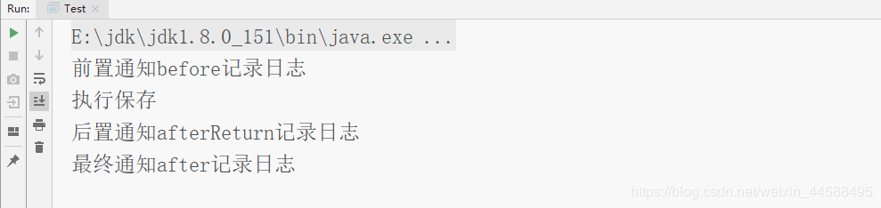
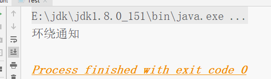
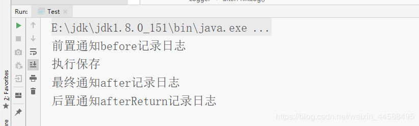
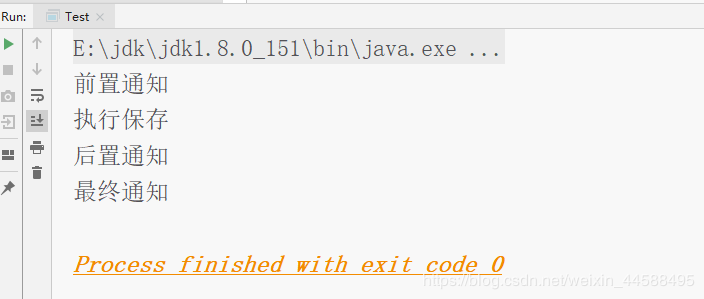
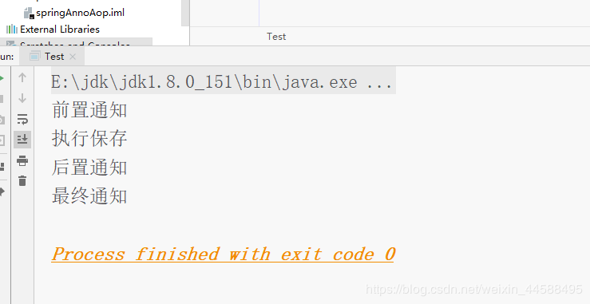

<!DOCTYPE html>
<html>
<head><meta name="generator" content="Hexo 3.9.0">
  <meta charset="utf-8">
  
  <!-- spring框架基础 | Zesystem&#39;blog -->
  <title>Zesystem's  Space</title>
  <meta name="viewport" content="width=device-width, initial-scale=1, maximum-scale=1">
  <meta name="keywords" content="This is Zesystem's blog.">
  <!-- 
  
    <meta name="keywords" content="MinHow,MinHow's Blog" />
    -->
  <meta name="description" content="复习了一下spring的知识点，篇幅可能有一些长。里面有关于IOC控制反转、DI注入、和AOP面向切面编程。">
<meta name="keywords" content="基础知识,Spring">
<meta property="og:type" content="article">
<meta property="og:title" content="spring框架基础">
<meta property="og:url" content="https://zesystem.github.io/2019/08/04/spring框架基础/index.html">
<meta property="og:site_name" content="Zesystem&#39;blog">
<meta property="og:description" content="复习了一下spring的知识点，篇幅可能有一些长。里面有关于IOC控制反转、DI注入、和AOP面向切面编程。">
<meta property="og:locale" content="default">
<meta property="og:image" content="https://zesystem.github.io/2019/08/04/spring框架基础/20190626235544941.png">
<meta property="og:image" content="https://zesystem.github.io/2019/08/04/spring框架基础/2019062708541687.png">
<meta property="og:image" content="https://zesystem.github.io/2019/08/04/spring框架基础/20190627094348603.png">
<meta property="og:image" content="https://zesystem.github.io/2019/08/04/spring框架基础/20190627094954241.png">
<meta property="og:image" content="https://zesystem.github.io/2019/08/04/spring框架基础/20190627100250915.png">
<meta property="og:updated_time" content="2019-08-05T03:03:45.932Z">
<meta name="twitter:card" content="summary">
<meta name="twitter:title" content="spring框架基础">
<meta name="twitter:description" content="复习了一下spring的知识点，篇幅可能有一些长。里面有关于IOC控制反转、DI注入、和AOP面向切面编程。">
<meta name="twitter:image" content="https://zesystem.github.io/2019/08/04/spring框架基础/20190626235544941.png">
  
  
    <link rel="icon" href="/favicon.ico">
  
  <link href="//cdn.bootcss.com/font-awesome/4.7.0/css/font-awesome.min.css" rel="stylesheet" type="text/css">
  <link rel="stylesheet" href="/css/style.css">
  <script src="/js/pace.min.js"></script>
  

  
	<script>
	var _hmt = _hmt || [];
	(function() {
	  var hm = document.createElement("script");
	  hm.src = "//hm.baidu.com/hm.js?true";
	  var s = document.getElementsByTagName("script")[0]; 
	  s.parentNode.insertBefore(hm, s);
	})();
	</script>

  
  <div style="display: none;">
    <script src="//s22.cnzz.com/z_stat.php?id=true&web_id=true" language="JavaScript"></script>
  </div>


</head>
</html>
<body>
  <div id="container">
      <header id="header">
    <div id="banner"></div>
    <div id="header-outer">
        <div id="header-menu" class="header-menu-pos animated">
            <div class="header-menu-container">
                <a href="/" class="left">
                    <span class="site-title">Zesystem</span>
                </a>
                <nav id="header-menu-nav" class="right">
                    
                    <a  href="/">
                        <i class="fa fa-home"></i>
                        <span>我的家</span>
                    </a>
                    
                    <a  href="/archives">
                        <i class="fa fa-archive"></i>
                        <span>干货s</span>
                    </a>
                    
                    <a  href="/about">
                        <i class="fa fa-user"></i>
                        <span>关于me</span>
                    </a>
                    
                </nav>
                <a class="mobile-header-menu-button">
                    <i class="fa fa-bars"></i>
                </a>
            </div>
        </div>
        <div id="header-row">
            <div id="logo">
                <a href="/">
                    
                </a>
            </div>
            <div class="header-info">
                <div id="header-title">
                    
                    <h2>
                        Zesystem
                    </h2>
                    
                </div>
                <div id="header-description">
                    
                    <h3>
                        不平凡的人生需要走不平凡的路
                    </h3>
                    
                </div>
            </div>
            <nav class="header-nav">
                <div class="social">
                    
                        <a title="CSDN" target="_blank" href="https://blog.csdn.net/weixin_44588495">
                            <i class="fa fa-home fa-2x"></i></a>
                    
                        <a title="Github" target="_blank" href="https://github.com/Zesystem">
                            <i class="fa fa-github fa-2x"></i></a>
                    
                        <a title="2502266520"  ">
                            <i class="fa fa-qq fa-2x"></i></a>
                    
                </div>
            </nav>
        </div>
    </div>
</header>
      <div class="outer">
        <section id="main" class="body-wrap"><article id="post-spring框架基础" class="article article-type-post" itemscope itemprop="blogPost">
  <div class="article-inner">
    
      <header class="article-header">
        
  
    <h1 class="post-title" itemprop="name">
      spring框架基础
    </h1>
    <div class="post-title-bar">
      <ul>
          
              <li>
                  <i class="fa fa-book"></i>
                  
                      <a href="/categories/java框架/">java框架</a>
                  
              </li>
          
        <li>
          <i class="fa fa-calendar"></i>  2019-08-04
        </li>
        <li>
          <i class="fa fa-eye"></i>
          <span id="busuanzi_value_page_pv"></span>
        </li>
      </ul>
    </div>
  

          
      </header>
    
    <div class="article-entry post-content" itemprop="articleBody">
      
            
            <p>复习了一下spring的知识点，篇幅可能有一些长。里面有关于IOC控制反转、DI注入、和AOP面向切面编程。</p>
<a id="more"></a>
<h3 id="1、IOC和DI"><a href="#1、IOC和DI" class="headerlink" title="1、IOC和DI"></a>1、IOC和DI</h3><h4 id="配置bean"><a href="#配置bean" class="headerlink" title="配置bean"></a>配置bean</h4><ul>
<li><p>直接用在配置文件中用bean标签</p>
<figure class="highlight xml"><table><tr><td class="gutter"><pre><span class="line">1</span><br><span class="line">2</span><br><span class="line">3</span><br><span class="line">4</span><br><span class="line">5</span><br><span class="line">6</span><br><span class="line">7</span><br><span class="line">8</span><br><span class="line">9</span><br></pre></td><td class="code"><pre><span class="line"><span class="meta">&lt;?xml version="1.0" encoding="UTF-8"?&gt;</span></span><br><span class="line"><span class="tag">&lt;<span class="name">beans</span> <span class="attr">xmlns</span>=<span class="string">"http://www.springframework.org/schema/beans"</span></span></span><br><span class="line"><span class="tag">       <span class="attr">xmlns:xsi</span>=<span class="string">"http://www.w3.org/2001/XMLSchema-instance"</span></span></span><br><span class="line"><span class="tag">       <span class="attr">xsi:schemaLocation</span>=<span class="string">"http://www.springframework.org/schema/beans</span></span></span><br><span class="line"><span class="tag"><span class="string">           http://www.springframework.org/schema/beans/spring-beans-3.0.xsd"</span>&gt;</span></span><br><span class="line"><span class="comment">&lt;!--    把创建的对象交给Spring 这种方法用于默认构造函数 --&gt;</span></span><br><span class="line">    <span class="tag">&lt;<span class="name">bean</span> <span class="attr">id</span>=<span class="string">"accountDao"</span> <span class="attr">class</span>=<span class="string">"com.spring.dao.Impl.IAccountDaoImpl"</span>&gt;</span><span class="tag">&lt;/<span class="name">bean</span>&gt;</span></span><br><span class="line">    <span class="tag">&lt;<span class="name">bean</span> <span class="attr">id</span>=<span class="string">"accountService"</span> <span class="attr">class</span>=<span class="string">"com.spring.service.Impl.IAccountServiceImpl"</span>&gt;</span><span class="tag">&lt;/<span class="name">bean</span>&gt;</span></span><br><span class="line"><span class="tag">&lt;/<span class="name">beans</span>&gt;</span></span><br></pre></td></tr></table></figure>
</li>
<li><p>通过类路径，读取配置文件创建对象。</p>
</li>
</ul>
<figure class="highlight java"><table><tr><td class="gutter"><pre><span class="line">1</span><br><span class="line">2</span><br><span class="line">3</span><br><span class="line">4</span><br><span class="line">5</span><br><span class="line">6</span><br><span class="line">7</span><br><span class="line">8</span><br><span class="line">9</span><br><span class="line">10</span><br></pre></td><td class="code"><pre><span class="line"><span class="keyword">public</span> <span class="class"><span class="keyword">class</span> <span class="title">Client</span> </span>&#123;</span><br><span class="line">    <span class="function"><span class="keyword">public</span> <span class="keyword">static</span> <span class="keyword">void</span> <span class="title">main</span><span class="params">(String[] args)</span> </span>&#123;</span><br><span class="line">        <span class="comment">//获取核心容器对象</span></span><br><span class="line">        ApplicationContext ac = <span class="keyword">new</span> ClassPathXmlApplicationContext(<span class="string">"bean.xml"</span>);</span><br><span class="line">        <span class="comment">//根据id获取bean对象</span></span><br><span class="line"><span class="comment">//       IAccountServiceImpl accountService = (IAccountServiceImpl) ac.getBean("accountService");</span></span><br><span class="line">       IAccountService accountService = ac.getBean(<span class="string">"accountService"</span>,IAccountService.class);</span><br><span class="line">       accountService.saveAccount(<span class="keyword">new</span> Account());</span><br><span class="line">    &#125;</span><br><span class="line">&#125;</span><br></pre></td></tr></table></figure>

<h4 id="bean对象的作用范围"><a href="#bean对象的作用范围" class="headerlink" title="bean对象的作用范围"></a>bean对象的作用范围</h4><ul>
<li>bean对象的作用范围<br>默认情况下，bean是单例的，但是如果我们想把它改成多例的，怎么办？<br>bean标签的scope属性：<br>作用：用于指定bean的作用范围<br>取值：<br>singleton：单例的（默认值）<br>prototype：多例的<br>request：作用于web应用的请求范围。<br>session：作用于web应用的会话范围。<br>global-session：作用于集群环境的会话范围（全局会话范围），当不是集群时，他就是session<figure class="highlight xml"><table><tr><td class="gutter"><pre><span class="line">1</span><br></pre></td><td class="code"><pre><span class="line"><span class="tag">&lt;<span class="name">bean</span> <span class="attr">id</span>=<span class="string">"accountDao"</span> <span class="attr">class</span>=<span class="string">"com.spring.dao.Impl.IAccountDaoImpl"</span> <span class="attr">scope</span>=<span class="string">""</span>&gt;</span><span class="tag">&lt;/<span class="name">bean</span>&gt;</span></span><br></pre></td></tr></table></figure>

</li>
</ul>
<h4 id="DI-依赖注入"><a href="#DI-依赖注入" class="headerlink" title="DI 依赖注入"></a>DI 依赖注入</h4><ul>
<li>当前类需要用到其他类的对象，由spring为我们提供，我们只需要在配置文件中说明。依赖中的维护称为DI。这里就像Person类中的name和age，一样。对于进入IOC之后的对象，需要进行初始化，用的就是DI。<br>能注入的数据：基本类型和String、其他的bean类型（在配置文件中或者注解配置过的bean）、复杂类型/集合类型<br>经常变化的数据不适合注入。<br>注入的方式和：使用构造函数提供、使用set方法提供、使用注解提供<h5 id="使用构造函数"><a href="#使用构造函数" class="headerlink" title="使用构造函数"></a>使用构造函数</h5>标签使用：constructor-arg<br>标签出现的位置：bean标签内部<br>标签中的属性</li>
<li>type：用于指定    要注入数据的数据类型，该数据类型也是构造函数中某个或者某些参数类型</li>
<li>index：用于指定要注入数据构造函数中指定索引位置的参数赋值。索引位置从0开始</li>
<li>name：    用于指定构造函数中指定指定名称参数赋值</li>
<li>value：用于指定基本类型数据</li>
<li>ref：用于指定其他bean类的数据<br>优势：在获取bean对象时，注入数据是必须的操作，否则对象无法创建成功。<br>弊端：改变了bean对象的实例化方式，使我们在创建对象时，如果用不到这些数据，也必须提供。<br>IAccountServiceImpl类</li>
</ul>
<figure class="highlight java"><table><tr><td class="gutter"><pre><span class="line">1</span><br><span class="line">2</span><br><span class="line">3</span><br><span class="line">4</span><br><span class="line">5</span><br><span class="line">6</span><br><span class="line">7</span><br><span class="line">8</span><br><span class="line">9</span><br><span class="line">10</span><br><span class="line">11</span><br><span class="line">12</span><br><span class="line">13</span><br><span class="line">14</span><br><span class="line">15</span><br><span class="line">16</span><br><span class="line">17</span><br><span class="line">18</span><br><span class="line">19</span><br><span class="line">20</span><br><span class="line">21</span><br><span class="line">22</span><br><span class="line">23</span><br></pre></td><td class="code"><pre><span class="line"><span class="keyword">package</span> com.spring.service.Impl;</span><br><span class="line"></span><br><span class="line"><span class="keyword">import</span> com.spring.dao.Impl.IAccountDaoImpl;</span><br><span class="line"><span class="keyword">import</span> com.spring.domain.Account;</span><br><span class="line"><span class="keyword">import</span> com.spring.service.IAccountService;</span><br><span class="line"></span><br><span class="line"><span class="keyword">import</span> java.util.Date;</span><br><span class="line"></span><br><span class="line"><span class="keyword">public</span> <span class="class"><span class="keyword">class</span> <span class="title">IAccountServiceImpl</span> <span class="keyword">implements</span> <span class="title">IAccountService</span> </span>&#123;</span><br><span class="line">    <span class="keyword">private</span> String name;</span><br><span class="line">    <span class="keyword">private</span> Integer age;</span><br><span class="line">    <span class="keyword">private</span> Date birthday;</span><br><span class="line"></span><br><span class="line">    <span class="function"><span class="keyword">public</span> <span class="title">IAccountServiceImpl</span><span class="params">(String name, Integer age, Date birthday)</span> </span>&#123;</span><br><span class="line">        <span class="keyword">this</span>.name = name;</span><br><span class="line">        <span class="keyword">this</span>.age = age;</span><br><span class="line">        <span class="keyword">this</span>.birthday = birthday;</span><br><span class="line">    &#125;</span><br><span class="line"></span><br><span class="line">    <span class="function"><span class="keyword">public</span> <span class="keyword">void</span> <span class="title">saveAccount</span><span class="params">(Account account)</span> </span>&#123;</span><br><span class="line">        System.out.println(<span class="string">"service保存"</span> +name+ <span class="string">","</span> +age+<span class="string">","</span> + birthday);</span><br><span class="line">    &#125;</span><br><span class="line">&#125;</span><br></pre></td></tr></table></figure>

<p>bean.xml</p>
<figure class="highlight xml"><table><tr><td class="gutter"><pre><span class="line">1</span><br><span class="line">2</span><br><span class="line">3</span><br><span class="line">4</span><br><span class="line">5</span><br><span class="line">6</span><br><span class="line">7</span><br><span class="line">8</span><br><span class="line">9</span><br><span class="line">10</span><br><span class="line">11</span><br><span class="line">12</span><br><span class="line">13</span><br><span class="line">14</span><br></pre></td><td class="code"><pre><span class="line"><span class="meta">&lt;?xml version="1.0" encoding="UTF-8"?&gt;</span></span><br><span class="line"><span class="tag">&lt;<span class="name">beans</span> <span class="attr">xmlns</span>=<span class="string">"http://www.springframework.org/schema/beans"</span></span></span><br><span class="line"><span class="tag">       <span class="attr">xmlns:xsi</span>=<span class="string">"http://www.w3.org/2001/XMLSchema-instance"</span></span></span><br><span class="line"><span class="tag">       <span class="attr">xsi:schemaLocation</span>=<span class="string">"http://www.springframework.org/schema/beans</span></span></span><br><span class="line"><span class="tag"><span class="string">           http://www.springframework.org/schema/beans/spring-beans-3.0.xsd"</span>&gt;</span></span><br><span class="line"><span class="comment">&lt;!--    spring中的依赖注入 --&gt;</span></span><br><span class="line"><span class="comment">&lt;!--    构造函数注入--&gt;</span></span><br><span class="line">    <span class="tag">&lt;<span class="name">bean</span> <span class="attr">id</span>=<span class="string">"accountService"</span> <span class="attr">class</span>=<span class="string">"com.spring.service.Impl.IAccountServiceImpl"</span> &gt;</span></span><br><span class="line">        <span class="tag">&lt;<span class="name">constructor-arg</span> <span class="attr">name</span>=<span class="string">"name"</span> <span class="attr">value</span>=<span class="string">"test"</span>&gt;</span><span class="tag">&lt;/<span class="name">constructor-arg</span>&gt;</span></span><br><span class="line">        <span class="tag">&lt;<span class="name">constructor-arg</span> <span class="attr">name</span>=<span class="string">"age"</span> <span class="attr">value</span>=<span class="string">"12"</span> &gt;</span><span class="tag">&lt;/<span class="name">constructor-arg</span>&gt;</span></span><br><span class="line">        <span class="tag">&lt;<span class="name">constructor-arg</span> <span class="attr">name</span>=<span class="string">"birthday"</span> <span class="attr">ref</span>=<span class="string">"now"</span>&gt;</span><span class="tag">&lt;/<span class="name">constructor-arg</span>&gt;</span></span><br><span class="line">    <span class="tag">&lt;/<span class="name">bean</span>&gt;</span></span><br><span class="line">    <span class="tag">&lt;<span class="name">bean</span> <span class="attr">id</span>=<span class="string">"now"</span> <span class="attr">class</span>=<span class="string">"java.util.Date"</span>&gt;</span><span class="tag">&lt;/<span class="name">bean</span>&gt;</span></span><br><span class="line"><span class="tag">&lt;/<span class="name">beans</span>&gt;</span></span><br></pre></td></tr></table></figure>

<h4 id="使用set方法注入（常用）"><a href="#使用set方法注入（常用）" class="headerlink" title="使用set方法注入（常用）"></a>使用set方法注入（常用）</h4><p>标签使用：property<br>标签出现的位置：bean标签内部<br>标签中的属性</p>
<ul>
<li>name：    用于指定注入时所调用的set方法名称</li>
<li>value：用于指定基本类型数据</li>
<li>ref：用于指定其他bean类的数据<br>优势：在创建对象时没有明确的限制，可以直接使用默认构造函数<br>弊端：如果有某个成员变量必须有值，则获取对象有可能set方法没有执行<figure class="highlight java"><table><tr><td class="gutter"><pre><span class="line">1</span><br><span class="line">2</span><br><span class="line">3</span><br><span class="line">4</span><br><span class="line">5</span><br><span class="line">6</span><br><span class="line">7</span><br><span class="line">8</span><br><span class="line">9</span><br><span class="line">10</span><br><span class="line">11</span><br><span class="line">12</span><br><span class="line">13</span><br><span class="line">14</span><br><span class="line">15</span><br><span class="line">16</span><br><span class="line">17</span><br><span class="line">18</span><br><span class="line">19</span><br><span class="line">20</span><br><span class="line">21</span><br><span class="line">22</span><br><span class="line">23</span><br><span class="line">24</span><br><span class="line">25</span><br><span class="line">26</span><br><span class="line">27</span><br><span class="line">28</span><br><span class="line">29</span><br></pre></td><td class="code"><pre><span class="line"><span class="keyword">package</span> com.spring.service.Impl;</span><br><span class="line"></span><br><span class="line"><span class="keyword">import</span> com.spring.dao.Impl.IAccountDaoImpl;</span><br><span class="line"><span class="keyword">import</span> com.spring.domain.Account;</span><br><span class="line"><span class="keyword">import</span> com.spring.service.IAccountService;</span><br><span class="line"></span><br><span class="line"><span class="keyword">import</span> java.util.Date;</span><br><span class="line"></span><br><span class="line"><span class="keyword">public</span> <span class="class"><span class="keyword">class</span> <span class="title">IAccountServiceImpl</span> <span class="keyword">implements</span> <span class="title">IAccountService</span> </span>&#123;</span><br><span class="line">    <span class="keyword">private</span> String name;</span><br><span class="line">    <span class="keyword">private</span> Integer age;</span><br><span class="line">    <span class="keyword">private</span> Date birthday;</span><br><span class="line"></span><br><span class="line">    <span class="function"><span class="keyword">public</span> <span class="keyword">void</span> <span class="title">setName</span><span class="params">(String name)</span> </span>&#123;</span><br><span class="line">        <span class="keyword">this</span>.name = name;</span><br><span class="line">    &#125;</span><br><span class="line"></span><br><span class="line">    <span class="function"><span class="keyword">public</span> <span class="keyword">void</span> <span class="title">setAge</span><span class="params">(Integer age)</span> </span>&#123;</span><br><span class="line">        <span class="keyword">this</span>.age = age;</span><br><span class="line">    &#125;</span><br><span class="line"></span><br><span class="line">    <span class="function"><span class="keyword">public</span> <span class="keyword">void</span> <span class="title">setBirthday</span><span class="params">(Date birthday)</span> </span>&#123;</span><br><span class="line">        <span class="keyword">this</span>.birthday = birthday;</span><br><span class="line">    &#125;</span><br><span class="line"></span><br><span class="line">    <span class="function"><span class="keyword">public</span> <span class="keyword">void</span> <span class="title">saveAccount</span><span class="params">(Account account)</span> </span>&#123;</span><br><span class="line">        System.out.println(<span class="string">"service保存"</span> +name+ <span class="string">","</span> +age+<span class="string">","</span> + birthday);</span><br><span class="line">    &#125;</span><br><span class="line">&#125;</span><br></pre></td></tr></table></figure>

</li>
</ul>
<p>bean.xml</p>
<figure class="highlight xml"><table><tr><td class="gutter"><pre><span class="line">1</span><br><span class="line">2</span><br><span class="line">3</span><br><span class="line">4</span><br><span class="line">5</span><br><span class="line">6</span><br><span class="line">7</span><br><span class="line">8</span><br><span class="line">9</span><br><span class="line">10</span><br><span class="line">11</span><br><span class="line">12</span><br><span class="line">13</span><br><span class="line">14</span><br></pre></td><td class="code"><pre><span class="line"><span class="meta">&lt;?xml version="1.0" encoding="UTF-8"?&gt;</span></span><br><span class="line"><span class="tag">&lt;<span class="name">beans</span> <span class="attr">xmlns</span>=<span class="string">"http://www.springframework.org/schema/beans"</span></span></span><br><span class="line"><span class="tag">       <span class="attr">xmlns:xsi</span>=<span class="string">"http://www.w3.org/2001/XMLSchema-instance"</span></span></span><br><span class="line"><span class="tag">       <span class="attr">xsi:schemaLocation</span>=<span class="string">"http://www.springframework.org/schema/beans</span></span></span><br><span class="line"><span class="tag"><span class="string">           http://www.springframework.org/schema/beans/spring-beans-3.0.xsd"</span>&gt;</span></span><br><span class="line"><span class="comment">&lt;!--    spring中的依赖注入 --&gt;</span></span><br><span class="line"><span class="comment">&lt;!--    构造函数注入--&gt;</span></span><br><span class="line">    <span class="tag">&lt;<span class="name">bean</span> <span class="attr">id</span>=<span class="string">"accountService"</span> <span class="attr">class</span>=<span class="string">"com.spring.service.Impl.IAccountServiceImpl"</span> &gt;</span></span><br><span class="line">       	<span class="tag">&lt;<span class="name">property</span> <span class="attr">name</span>=<span class="string">"name"</span> <span class="attr">value</span>=<span class="string">"test"</span>&gt;</span><span class="tag">&lt;/<span class="name">property</span>&gt;</span></span><br><span class="line">        <span class="tag">&lt;<span class="name">property</span> <span class="attr">name</span>=<span class="string">"age"</span> <span class="attr">value</span>=<span class="string">"12"</span> &gt;</span><span class="tag">&lt;/<span class="name">property</span>&gt;</span></span><br><span class="line">        <span class="tag">&lt;<span class="name">property</span> <span class="attr">name</span>=<span class="string">"birthday"</span> <span class="attr">ref</span>=<span class="string">"nono"</span>&gt;</span><span class="tag">&lt;/<span class="name">property</span>&gt;</span></span><br><span class="line">    <span class="tag">&lt;/<span class="name">bean</span>&gt;</span></span><br><span class="line">    <span class="tag">&lt;<span class="name">bean</span> <span class="attr">id</span>=<span class="string">"nono"</span> <span class="attr">class</span>=<span class="string">"java.util.Date"</span>&gt;</span><span class="tag">&lt;/<span class="name">bean</span>&gt;</span></span><br><span class="line"><span class="tag">&lt;/<span class="name">beans</span>&gt;</span></span><br></pre></td></tr></table></figure>

<h4 id="复杂类型的注入-集合类型的注入"><a href="#复杂类型的注入-集合类型的注入" class="headerlink" title="复杂类型的注入/集合类型的注入"></a>复杂类型的注入/集合类型的注入</h4><p>bean.xml</p>
<figure class="highlight xml"><table><tr><td class="gutter"><pre><span class="line">1</span><br><span class="line">2</span><br><span class="line">3</span><br><span class="line">4</span><br><span class="line">5</span><br><span class="line">6</span><br><span class="line">7</span><br><span class="line">8</span><br><span class="line">9</span><br><span class="line">10</span><br><span class="line">11</span><br><span class="line">12</span><br><span class="line">13</span><br><span class="line">14</span><br><span class="line">15</span><br><span class="line">16</span><br><span class="line">17</span><br><span class="line">18</span><br><span class="line">19</span><br><span class="line">20</span><br><span class="line">21</span><br><span class="line">22</span><br><span class="line">23</span><br><span class="line">24</span><br><span class="line">25</span><br><span class="line">26</span><br><span class="line">27</span><br><span class="line">28</span><br><span class="line">29</span><br><span class="line">30</span><br><span class="line">31</span><br><span class="line">32</span><br><span class="line">33</span><br><span class="line">34</span><br><span class="line">35</span><br><span class="line">36</span><br><span class="line">37</span><br></pre></td><td class="code"><pre><span class="line"><span class="meta">&lt;?xml version="1.0" encoding="UTF-8"?&gt;</span></span><br><span class="line"><span class="tag">&lt;<span class="name">beans</span> <span class="attr">xmlns</span>=<span class="string">"http://www.springframework.org/schema/beans"</span></span></span><br><span class="line"><span class="tag">       <span class="attr">xmlns:xsi</span>=<span class="string">"http://www.w3.org/2001/XMLSchema-instance"</span></span></span><br><span class="line"><span class="tag">       <span class="attr">xsi:schemaLocation</span>=<span class="string">"http://www.springframework.org/schema/beans</span></span></span><br><span class="line"><span class="tag"><span class="string">           http://www.springframework.org/schema/beans/spring-beans-3.0.xsd"</span>&gt;</span></span><br><span class="line"><span class="comment">&lt;!--    spring中的依赖注入 --&gt;</span></span><br><span class="line"><span class="comment">&lt;!--    构造函数注入--&gt;</span></span><br><span class="line">    <span class="tag">&lt;<span class="name">bean</span> <span class="attr">id</span>=<span class="string">"accountService"</span> <span class="attr">class</span>=<span class="string">"com.spring.service.Impl.IAccountServiceImpl"</span> &gt;</span></span><br><span class="line">       <span class="tag">&lt;<span class="name">property</span> <span class="attr">name</span>=<span class="string">"array"</span> &gt;</span></span><br><span class="line">           <span class="tag">&lt;<span class="name">array</span>&gt;</span></span><br><span class="line">               <span class="tag">&lt;<span class="name">value</span>&gt;</span>1<span class="tag">&lt;/<span class="name">value</span>&gt;</span></span><br><span class="line">               <span class="tag">&lt;<span class="name">value</span>&gt;</span>2<span class="tag">&lt;/<span class="name">value</span>&gt;</span></span><br><span class="line">               <span class="tag">&lt;<span class="name">value</span>&gt;</span>3<span class="tag">&lt;/<span class="name">value</span>&gt;</span></span><br><span class="line">           <span class="tag">&lt;/<span class="name">array</span>&gt;</span></span><br><span class="line">       <span class="tag">&lt;/<span class="name">property</span>&gt;</span></span><br><span class="line">        <span class="tag">&lt;<span class="name">property</span> <span class="attr">name</span>=<span class="string">"array"</span> &gt;</span></span><br><span class="line">            <span class="tag">&lt;<span class="name">list</span>&gt;</span></span><br><span class="line">                <span class="tag">&lt;<span class="name">value</span>&gt;</span>1<span class="tag">&lt;/<span class="name">value</span>&gt;</span></span><br><span class="line">                <span class="tag">&lt;<span class="name">value</span>&gt;</span>2<span class="tag">&lt;/<span class="name">value</span>&gt;</span></span><br><span class="line">                <span class="tag">&lt;<span class="name">value</span>&gt;</span>3<span class="tag">&lt;/<span class="name">value</span>&gt;</span></span><br><span class="line">            <span class="tag">&lt;/<span class="name">list</span>&gt;</span></span><br><span class="line">        <span class="tag">&lt;/<span class="name">property</span>&gt;</span></span><br><span class="line">        <span class="tag">&lt;<span class="name">property</span> <span class="attr">name</span>=<span class="string">"map"</span> &gt;</span></span><br><span class="line">            <span class="tag">&lt;<span class="name">map</span>&gt;</span></span><br><span class="line">                <span class="tag">&lt;<span class="name">entry</span> <span class="attr">key</span>=<span class="string">"key1"</span> <span class="attr">value</span>=<span class="string">"value1"</span>&gt;</span><span class="tag">&lt;/<span class="name">entry</span>&gt;</span></span><br><span class="line">                <span class="tag">&lt;<span class="name">entry</span> <span class="attr">key</span>=<span class="string">"key2"</span>&gt;</span></span><br><span class="line">                    <span class="tag">&lt;<span class="name">value</span>&gt;</span>value2<span class="tag">&lt;/<span class="name">value</span>&gt;</span></span><br><span class="line">                <span class="tag">&lt;/<span class="name">entry</span>&gt;</span></span><br><span class="line">            <span class="tag">&lt;/<span class="name">map</span>&gt;</span></span><br><span class="line">        <span class="tag">&lt;/<span class="name">property</span>&gt;</span></span><br><span class="line">        <span class="tag">&lt;<span class="name">property</span> <span class="attr">name</span>=<span class="string">"propertyies"</span>&gt;</span></span><br><span class="line">            <span class="tag">&lt;<span class="name">props</span>&gt;</span></span><br><span class="line">                <span class="tag">&lt;<span class="name">prop</span> <span class="attr">key</span>=<span class="string">"key1"</span>&gt;</span>value1<span class="tag">&lt;/<span class="name">prop</span>&gt;</span></span><br><span class="line">            <span class="tag">&lt;/<span class="name">props</span>&gt;</span></span><br><span class="line">        <span class="tag">&lt;/<span class="name">property</span>&gt;</span></span><br><span class="line">    <span class="tag">&lt;/<span class="name">bean</span>&gt;</span></span><br><span class="line"><span class="tag">&lt;/<span class="name">beans</span>&gt;</span></span><br></pre></td></tr></table></figure>

<h3 id="2、基于注解的IOC和DI"><a href="#2、基于注解的IOC和DI" class="headerlink" title="2、基于注解的IOC和DI"></a>2、基于注解的IOC和DI</h3><p>分类：</p>
<ul>
<li>用于创建对象<br>他们的作用就和在xml配置文件中编写一个&lt;bean&gt;标签的实现功能是一样的。</li>
<li>用于注入数据<br>他们的作用就和在xml配置文件中的&lt;bean&gt;标签中写一个&lt;property&gt;标签的作用是一样的。</li>
<li>用于改变作用范围<br>他们的作用集合在bean标签中使用scope属性实现的功能是一样的。</li>
<li>和生命周期有关<br>他们的作用就和在bean标签中使用init-method和destory-method是一样的<h4 id="IOC注解"><a href="#IOC注解" class="headerlink" title="IOC注解"></a>IOC注解</h4></li>
<li>@Component：<br>作用：用于把当前的类对象存入Spring容器中。<br>属性：value用于指定bean的id。当我们不写的时候，它的默认值是当前的类名，且首字母小写。<br>bean.xml文件 这里需要用到context这个名称空间</li>
</ul>
<figure class="highlight xml"><table><tr><td class="gutter"><pre><span class="line">1</span><br><span class="line">2</span><br><span class="line">3</span><br><span class="line">4</span><br><span class="line">5</span><br><span class="line">6</span><br><span class="line">7</span><br><span class="line">8</span><br><span class="line">9</span><br><span class="line">10</span><br><span class="line">11</span><br></pre></td><td class="code"><pre><span class="line"><span class="meta">&lt;?xml version="1.0" encoding="UTF-8"?&gt;</span></span><br><span class="line"><span class="tag">&lt;<span class="name">beans</span> <span class="attr">xmlns</span>=<span class="string">"http://www.springframework.org/schema/beans"</span></span></span><br><span class="line"><span class="tag">       <span class="attr">xmlns:xsi</span>=<span class="string">"http://www.w3.org/2001/XMLSchema-instance"</span></span></span><br><span class="line"><span class="tag">       <span class="attr">xmlns:context</span>=<span class="string">"http://www.springframework.org/schema/context"</span></span></span><br><span class="line"><span class="tag">       <span class="attr">xsi:schemaLocation</span>=<span class="string">"http://www.springframework.org/schema/beans</span></span></span><br><span class="line"><span class="tag"><span class="string">           http://www.springframework.org/schema/beans/spring-beans-3.0.xsd</span></span></span><br><span class="line"><span class="tag"><span class="string">           http://www.springframework.org/schema/context</span></span></span><br><span class="line"><span class="tag"><span class="string">           http://www.springframework.org/schema/context/spring-context.xsd"</span>&gt;</span></span><br><span class="line"><span class="comment">&lt;!--    告知spring在创建容器的时候要扫描的包，配置所需要的标签不是在beans的约束中，而是一个名称为context名称空间和约束中。--&gt;</span></span><br><span class="line">    <span class="tag">&lt;<span class="name">context:component-scan</span> <span class="attr">base-package</span>=<span class="string">"com.spring"</span>&gt;</span><span class="tag">&lt;/<span class="name">context:component-scan</span>&gt;</span></span><br><span class="line"><span class="tag">&lt;/<span class="name">beans</span>&gt;</span></span><br></pre></td></tr></table></figure>

<p>类  这里采用用accountService作为id</p>
<figure class="highlight java"><table><tr><td class="gutter"><pre><span class="line">1</span><br><span class="line">2</span><br><span class="line">3</span><br><span class="line">4</span><br><span class="line">5</span><br><span class="line">6</span><br><span class="line">7</span><br><span class="line">8</span><br></pre></td><td class="code"><pre><span class="line"><span class="meta">@Component</span>(value = <span class="string">"accountService"</span>)</span><br><span class="line"><span class="keyword">public</span> <span class="class"><span class="keyword">class</span> <span class="title">IAccountServiceImpl</span> <span class="keyword">implements</span> <span class="title">IAccountService</span> </span>&#123;</span><br><span class="line"></span><br><span class="line">    <span class="keyword">private</span> IAccountDao accountDao;</span><br><span class="line">    <span class="function"><span class="keyword">public</span> <span class="keyword">void</span> <span class="title">saveAccount</span><span class="params">()</span> </span>&#123;</span><br><span class="line">        System.out.println(<span class="string">"保存"</span>);</span><br><span class="line">    &#125;</span><br><span class="line">&#125;</span><br></pre></td></tr></table></figure>

<p>测试类  当扫描xml文件的时候就自动给创建了类对象</p>
<figure class="highlight java"><table><tr><td class="gutter"><pre><span class="line">1</span><br><span class="line">2</span><br><span class="line">3</span><br><span class="line">4</span><br><span class="line">5</span><br><span class="line">6</span><br><span class="line">7</span><br><span class="line">8</span><br><span class="line">9</span><br><span class="line">10</span><br></pre></td><td class="code"><pre><span class="line"><span class="keyword">public</span> <span class="class"><span class="keyword">class</span> <span class="title">Client</span> </span>&#123;</span><br><span class="line">    <span class="function"><span class="keyword">public</span> <span class="keyword">static</span> <span class="keyword">void</span> <span class="title">main</span><span class="params">(String[] args)</span> </span>&#123;</span><br><span class="line">        <span class="comment">//获取核心容器对象</span></span><br><span class="line">        ApplicationContext ac = <span class="keyword">new</span> ClassPathXmlApplicationContext(<span class="string">"bean.xml"</span>);</span><br><span class="line">        <span class="comment">//根据id获取bean对象</span></span><br><span class="line"><span class="comment">//       IAccountServiceImpl accountService = (IAccountServiceImpl) ac.getBean("accountService");</span></span><br><span class="line">       IAccountService accountService = ac. getBean(<span class="string">"accountService"</span>,IAccountService.class);</span><br><span class="line">       accountService.saveAccount();</span><br><span class="line">    &#125;</span><br><span class="line">&#125;</span><br></pre></td></tr></table></figure>

<ul>
<li>@Controller：一般用于表现层</li>
<li>@Service：一般用在业务层</li>
<li>@Repository：一般用在持久层</li>
<li>以上三个注解他们的作用和属性与@Component是一摸一样。</li>
<li>他们三个是spring框架为我们提供明确的三层使用的注解，使我们对三层对象更加清晰的。<h4 id="DI注解"><a href="#DI注解" class="headerlink" title="DI注解"></a>DI注解</h4></li>
<li>Autowired：<br>作用：自动按类型注入，只要容器有唯一的bean对象类型和要注入的变量类型匹配，就可以成功注入。<br>如果ioc容器中没有任何bean类型和要注入的变量类型匹配，则报错。<br>如果ioc容器中有多个类型匹配时，那么它首先找到对应接口的实现类，然后根据变量名=IOC容器中的id去寻找答案<br>出现的位置：可以是变量上，也可以是方法上。<br>细节：在使用注解注入时，set方法就不是必须的了</li>
</ul>
<figure class="highlight java"><table><tr><td class="gutter"><pre><span class="line">1</span><br><span class="line">2</span><br><span class="line">3</span><br><span class="line">4</span><br><span class="line">5</span><br><span class="line">6</span><br><span class="line">7</span><br><span class="line">8</span><br><span class="line">9</span><br></pre></td><td class="code"><pre><span class="line"></span><br><span class="line"><span class="meta">@Service</span>(<span class="string">"accountService"</span>)</span><br><span class="line"><span class="keyword">public</span> <span class="class"><span class="keyword">class</span> <span class="title">IAccountServiceImpl</span> <span class="keyword">implements</span> <span class="title">IAccountService</span> </span>&#123;</span><br><span class="line">    <span class="meta">@Autowired</span></span><br><span class="line">    <span class="keyword">private</span> IAccountDao accountDao;</span><br><span class="line">    <span class="function"><span class="keyword">public</span> <span class="keyword">void</span> <span class="title">saveAccount</span><span class="params">()</span> </span>&#123;</span><br><span class="line">        accountDao.saveAccount();</span><br><span class="line">    &#125;</span><br><span class="line">&#125;</span><br></pre></td></tr></table></figure>

<p>如果ioc容器中有多个类型匹配时，且对应的变量名也不匹配对应容器中的值时，@Autowire解决不了</p>
<ul>
<li>@Qualifier<br>作用：在按照类中注入的基础上再按照名称注入。它给类成员注入时，不能单独使用，再给方法参数注入时可以。<br>属性：value用于指定注入bean的id</li>
</ul>
<figure class="highlight java"><table><tr><td class="gutter"><pre><span class="line">1</span><br><span class="line">2</span><br><span class="line">3</span><br><span class="line">4</span><br><span class="line">5</span><br><span class="line">6</span><br><span class="line">7</span><br><span class="line">8</span><br><span class="line">9</span><br></pre></td><td class="code"><pre><span class="line"><span class="meta">@Service</span>(<span class="string">"accountService"</span>)</span><br><span class="line"><span class="keyword">public</span> <span class="class"><span class="keyword">class</span> <span class="title">IAccountServiceImpl</span> <span class="keyword">implements</span> <span class="title">IAccountService</span> </span>&#123;</span><br><span class="line">    <span class="meta">@Autowired</span></span><br><span class="line">    <span class="meta">@Qualifier</span>(<span class="string">"accountDao"</span>)</span><br><span class="line">    <span class="keyword">private</span> IAccountDao accountDao;</span><br><span class="line">    <span class="function"><span class="keyword">public</span> <span class="keyword">void</span> <span class="title">saveAccount</span><span class="params">()</span> </span>&#123;</span><br><span class="line">        accountDao.saveAccount();</span><br><span class="line">    &#125;</span><br><span class="line">&#125;</span><br></pre></td></tr></table></figure>

<ul>
<li>Resource<br>作用：直接按照在bean标签中使用的id注入。他可以独立使用<br>属性：name：用于指定bean的id</li>
</ul>
<figure class="highlight java"><table><tr><td class="gutter"><pre><span class="line">1</span><br><span class="line">2</span><br><span class="line">3</span><br><span class="line">4</span><br><span class="line">5</span><br><span class="line">6</span><br><span class="line">7</span><br><span class="line">8</span><br></pre></td><td class="code"><pre><span class="line"><span class="meta">@Service</span>(<span class="string">"accountService"</span>)</span><br><span class="line"><span class="keyword">public</span> <span class="class"><span class="keyword">class</span> <span class="title">IAccountServiceImpl</span> <span class="keyword">implements</span> <span class="title">IAccountService</span> </span>&#123;</span><br><span class="line">    <span class="meta">@Resource</span>(name=<span class="string">"accountDao"</span>)</span><br><span class="line">    <span class="keyword">private</span> IAccountDao accountDao;</span><br><span class="line">    <span class="function"><span class="keyword">public</span> <span class="keyword">void</span> <span class="title">saveAccount</span><span class="params">()</span> </span>&#123;</span><br><span class="line">        accountDao.saveAccount();</span><br><span class="line">    &#125;</span><br><span class="line">&#125;</span><br></pre></td></tr></table></figure>

<blockquote>
<p>以上三个注解只能注入其他bean类型的数据，而基本类型的String类型无法使用上述注解实现。另外集合类型的注入只能通过XML来实现。</p>
<ul>
<li>Value：用于注入基本类型和String类型的数据<br>属性：value用于指定数据的值。他可以使用spring中的SpEl(Spring的EL表达式)<br>SpEl的写法：${表达式}</li>
</ul>
</blockquote>
<figure class="highlight java"><table><tr><td class="gutter"><pre><span class="line">1</span><br><span class="line">2</span><br><span class="line">3</span><br><span class="line">4</span><br><span class="line">5</span><br><span class="line">6</span><br><span class="line">7</span><br><span class="line">8</span><br></pre></td><td class="code"><pre><span class="line"><span class="meta">@Repository</span>(<span class="string">"accountDao"</span>)</span><br><span class="line"><span class="keyword">public</span> <span class="class"><span class="keyword">class</span> <span class="title">IAccountDaoImpl</span> <span class="keyword">implements</span> <span class="title">IAccountDao</span> </span>&#123;</span><br><span class="line">    <span class="meta">@Value</span>(value=<span class="string">"1"</span>)</span><br><span class="line">    <span class="keyword">private</span>  <span class="keyword">int</span> id;</span><br><span class="line">    <span class="function"><span class="keyword">public</span> <span class="keyword">void</span> <span class="title">saveAccount</span><span class="params">()</span> </span>&#123;</span><br><span class="line">        System.out.println(<span class="string">"保存"</span> + id);</span><br><span class="line">    &#125;</span><br><span class="line">&#125;</span><br></pre></td></tr></table></figure>

<h4 id="用于改变作用范围"><a href="#用于改变作用范围" class="headerlink" title="用于改变作用范围"></a>用于改变作用范围</h4><p>他们的作用就和在bean标签中使用scope属性实现的功能是一样的</p>
<ul>
<li>Scope<br>作用：用于指定bean的作用范围<br>属性：value 指定范围的值。常取值：singleton、prototype<br>默认是singleton<figure class="highlight java"><table><tr><td class="gutter"><pre><span class="line">1</span><br><span class="line">2</span><br><span class="line">3</span><br><span class="line">4</span><br><span class="line">5</span><br><span class="line">6</span><br><span class="line">7</span><br><span class="line">8</span><br><span class="line">9</span><br></pre></td><td class="code"><pre><span class="line"><span class="meta">@Service</span>(<span class="string">"accountService"</span>)</span><br><span class="line"><span class="meta">@Scope</span>(<span class="string">"prototype"</span>)</span><br><span class="line"><span class="keyword">public</span> <span class="class"><span class="keyword">class</span> <span class="title">IAccountServiceImpl</span> <span class="keyword">implements</span> <span class="title">IAccountService</span> </span>&#123;</span><br><span class="line">    <span class="meta">@Resource</span>(name=<span class="string">"accountDao"</span>)</span><br><span class="line">    <span class="keyword">private</span> IAccountDao accountDao;</span><br><span class="line">    <span class="function"><span class="keyword">public</span> <span class="keyword">void</span> <span class="title">saveAccount</span><span class="params">()</span> </span>&#123;</span><br><span class="line">        accountDao.saveAccount();</span><br><span class="line">    &#125;</span><br><span class="line">&#125;</span><br></pre></td></tr></table></figure>

</li>
</ul>
<h3 id="3、AOP面向切面编程（基于配置文件）"><a href="#3、AOP面向切面编程（基于配置文件）" class="headerlink" title="3、AOP面向切面编程（基于配置文件）"></a>3、AOP面向切面编程（基于配置文件）</h3><ul>
<li>作用：在程序运行期间，不修改源码的基础上，对已有的方法增强</li>
<li>优势：减少重复代码、提高开发效率、维护方便</li>
<li>我们想的是在每个方法前都打印日字<h4 id="基本代码"><a href="#基本代码" class="headerlink" title="基本代码"></a>基本代码</h4>（1）IAccountService接口</li>
</ul>
<figure class="highlight java"><table><tr><td class="gutter"><pre><span class="line">1</span><br><span class="line">2</span><br><span class="line">3</span><br><span class="line">4</span><br><span class="line">5</span><br><span class="line">6</span><br><span class="line">7</span><br></pre></td><td class="code"><pre><span class="line"><span class="keyword">package</span> com.spring.service;</span><br><span class="line"></span><br><span class="line"><span class="keyword">public</span> <span class="class"><span class="keyword">interface</span> <span class="title">IAccountService</span> </span>&#123;</span><br><span class="line">    <span class="function"><span class="keyword">void</span> <span class="title">saveAccount</span><span class="params">()</span></span>;</span><br><span class="line">    <span class="function"><span class="keyword">void</span> <span class="title">updateAccount</span><span class="params">(<span class="keyword">int</span> i)</span></span>;</span><br><span class="line">    <span class="function"><span class="keyword">int</span> <span class="title">deleteAccount</span><span class="params">()</span></span>;</span><br><span class="line">&#125;</span><br></pre></td></tr></table></figure>

<p>（2）AccountService类</p>
<figure class="highlight java"><table><tr><td class="gutter"><pre><span class="line">1</span><br><span class="line">2</span><br><span class="line">3</span><br><span class="line">4</span><br><span class="line">5</span><br><span class="line">6</span><br><span class="line">7</span><br><span class="line">8</span><br><span class="line">9</span><br><span class="line">10</span><br><span class="line">11</span><br><span class="line">12</span><br></pre></td><td class="code"><pre><span class="line"><span class="keyword">public</span> <span class="class"><span class="keyword">class</span> <span class="title">AccountService</span> <span class="keyword">implements</span> <span class="title">IAccountService</span> </span>&#123;</span><br><span class="line">    <span class="function"><span class="keyword">public</span> <span class="keyword">void</span> <span class="title">saveAccount</span><span class="params">()</span> </span>&#123;</span><br><span class="line">        System.out.println(<span class="string">"执行保存"</span>);</span><br><span class="line">    &#125;</span><br><span class="line">    <span class="function"><span class="keyword">public</span> <span class="keyword">void</span> <span class="title">updateAccount</span><span class="params">(<span class="keyword">int</span> i)</span> </span>&#123;</span><br><span class="line">        System.out.println(<span class="string">"执行更新"</span>);</span><br><span class="line">    &#125;</span><br><span class="line">    <span class="function"><span class="keyword">public</span> <span class="keyword">int</span> <span class="title">deleteAccount</span><span class="params">()</span> </span>&#123;</span><br><span class="line">        System.out.println(<span class="string">"执行删除"</span>);</span><br><span class="line">        <span class="keyword">return</span> <span class="number">0</span>;</span><br><span class="line">    &#125;</span><br><span class="line">&#125;</span><br></pre></td></tr></table></figure>

<p>（3）Logger类</p>
<figure class="highlight java"><table><tr><td class="gutter"><pre><span class="line">1</span><br><span class="line">2</span><br><span class="line">3</span><br><span class="line">4</span><br><span class="line">5</span><br><span class="line">6</span><br><span class="line">7</span><br><span class="line">8</span><br></pre></td><td class="code"><pre><span class="line"><span class="keyword">public</span> <span class="class"><span class="keyword">class</span> <span class="title">Logger</span> </span>&#123;</span><br><span class="line">    <span class="comment">/**</span></span><br><span class="line"><span class="comment">     * 用于打印日志，计划让其在切入点方法执行之前执行（切入点方法就是业务层方法）</span></span><br><span class="line"><span class="comment">     */</span></span><br><span class="line">    <span class="function"><span class="keyword">public</span> <span class="keyword">void</span> <span class="title">printLog</span><span class="params">()</span></span>&#123;</span><br><span class="line">        System.out.println(<span class="string">"记录日志"</span>);</span><br><span class="line">    &#125;</span><br><span class="line">&#125;</span><br></pre></td></tr></table></figure>

<p>（4）main类</p>
<figure class="highlight java"><table><tr><td class="gutter"><pre><span class="line">1</span><br><span class="line">2</span><br><span class="line">3</span><br><span class="line">4</span><br><span class="line">5</span><br><span class="line">6</span><br><span class="line">7</span><br></pre></td><td class="code"><pre><span class="line"><span class="keyword">public</span> <span class="class"><span class="keyword">class</span> <span class="title">Test</span> </span>&#123;</span><br><span class="line">    <span class="function"><span class="keyword">public</span> <span class="keyword">static</span> <span class="keyword">void</span> <span class="title">main</span><span class="params">(String[] args)</span> </span>&#123;</span><br><span class="line">        ApplicationContext ac = <span class="keyword">new</span> ClassPathXmlApplicationContext(<span class="string">"bean.xml"</span>);</span><br><span class="line">        IAccountService accountService = (IAccountService) ac.getBean(<span class="string">"accountService"</span>);</span><br><span class="line">        accountService.saveAccount();</span><br><span class="line">    &#125;</span><br><span class="line">&#125;</span><br></pre></td></tr></table></figure>

<ul>
<li>配置bean.xml文件</li>
</ul>
<p> 1.把通知beans也交给spring来管理</p>
<ol start="2">
<li>使用aop:config标签表明aop的配置</li>
<li>使用aop:aspect标签配置切面，id：是给切面提供一个唯一标识，ref：是给定通知类的bean的id</li>
<li>在aop:apect标签内使用对应的标签配置通知的类型</li>
<li>aop:before前置通知，pointcut:用于指定切入点表达式，该表达式的含义指的是对业务层中哪些方法增强</li>
<li>切入点表达式：execution(表达式)，表达式：访问修饰符 返回值 包名.包名.类名.方法名（参数列表）<figure class="highlight xml"><table><tr><td class="gutter"><pre><span class="line">1</span><br><span class="line">2</span><br><span class="line">3</span><br><span class="line">4</span><br><span class="line">5</span><br><span class="line">6</span><br><span class="line">7</span><br><span class="line">8</span><br><span class="line">9</span><br><span class="line">10</span><br><span class="line">11</span><br><span class="line">12</span><br><span class="line">13</span><br><span class="line">14</span><br><span class="line">15</span><br><span class="line">16</span><br><span class="line">17</span><br><span class="line">18</span><br></pre></td><td class="code"><pre><span class="line"><span class="meta">&lt;?xml version="1.0" encoding="UTF-8"?&gt;</span></span><br><span class="line"><span class="tag">&lt;<span class="name">beans</span> <span class="attr">xmlns</span>=<span class="string">"http://www.springframework.org/schema/beans"</span></span></span><br><span class="line"><span class="tag">       <span class="attr">xmlns:xsi</span>=<span class="string">"http://www.w3.org/2001/XMLSchema-instance"</span></span></span><br><span class="line"><span class="tag">       <span class="attr">xmlns:aop</span>=<span class="string">"http://www.springframework.org/schema/aop"</span></span></span><br><span class="line"><span class="tag">       <span class="attr">xsi:schemaLocation</span>=<span class="string">"http://www.springframework.org/schema/beans</span></span></span><br><span class="line"><span class="tag"><span class="string">           http://www.springframework.org/schema/beans/spring-beans-3.0.xsd</span></span></span><br><span class="line"><span class="tag"><span class="string">           http://www.springframework.org/schema/aop</span></span></span><br><span class="line"><span class="tag"><span class="string">           http://www.springframework.org/schema/aop/spring-aop.xsd"</span>&gt;</span></span><br><span class="line">    <span class="tag">&lt;<span class="name">bean</span> <span class="attr">id</span>=<span class="string">"accountService"</span> <span class="attr">class</span>=<span class="string">"com.spring.service.Impl.AccountService"</span>&gt;</span><span class="tag">&lt;/<span class="name">bean</span>&gt;</span></span><br><span class="line">    <span class="tag">&lt;<span class="name">bean</span> <span class="attr">id</span>=<span class="string">"logger"</span> <span class="attr">class</span>=<span class="string">"com.spring.utils.Logger"</span>&gt;</span><span class="tag">&lt;/<span class="name">bean</span>&gt;</span></span><br><span class="line">    <span class="tag">&lt;<span class="name">aop:config</span>&gt;</span></span><br><span class="line">        <span class="comment">&lt;!--        配置切面--&gt;</span></span><br><span class="line">        <span class="tag">&lt;<span class="name">aop:aspect</span> <span class="attr">id</span>=<span class="string">"logAdvice"</span> <span class="attr">ref</span>=<span class="string">"logger"</span>&gt;</span></span><br><span class="line">            <span class="comment">&lt;!--            配置通知的类型，并且建立通知方法和切入点的方法名关联--&gt;</span></span><br><span class="line">            <span class="tag">&lt;<span class="name">aop:before</span> <span class="attr">method</span>=<span class="string">"printLog"</span> <span class="attr">pointcut</span>=<span class="string">"execution(public void com.spring.service.Impl.AccountService.saveAccount())"</span>&gt;</span><span class="tag">&lt;/<span class="name">aop:before</span>&gt;</span></span><br><span class="line">        <span class="tag">&lt;/<span class="name">aop:aspect</span>&gt;</span></span><br><span class="line">    <span class="tag">&lt;/<span class="name">aop:config</span>&gt;</span></span><br><span class="line"><span class="tag">&lt;/<span class="name">beans</span>&gt;</span></span><br></pre></td></tr></table></figure>

</li>
</ol>
<ul>
<li>切入点表达式的写法：<blockquote>
<p>标准写法：<br>public void com.spring.service.impl.AccountServiceImpl.saveAccount()<br>全通配写法 ：* * 。。<em>。\</em> (。。) 这里的。为一个点<br>访问修饰符可以省略：void com.spring.service.impl.AccountServiceImpl.saveAccount()<br>返回值使用通配符：*  com.spring.service.impl.AccountServiceImpl.saveAccount()<br>包名可以使用通配符：* *.*.*.*.AccountServiceImpl.saveAccount()<br>包名可以使用。。表示当前包及其子包：* *。。AccountServiceImpl.saveAccount()<br>类名和方法名：* *。。*.*()<br>参数列表：可以直接写数据类型：基本数据类型直接写名称 int，引用类型写包名.类名的方式，java.lang.String。<br>可以使用通配符表示任意类型的数据，但是必须有参数：* *。。*.*(*)<br>可以使用。。表示有无参数均可，有参数可以是任意类型。 </p>
</blockquote>
</li>
<li>实际开发中的写法：</li>
<li>切到业务层实现类下的所有方法： * com.spring.service.impl.*.*(。。)；<h4 id="四种常用通知类型"><a href="#四种常用通知类型" class="headerlink" title="四种常用通知类型"></a>四种常用通知类型</h4>Logger类<br>这里只需要修改两个文件。</li>
</ul>
<figure class="highlight java"><table><tr><td class="gutter"><pre><span class="line">1</span><br><span class="line">2</span><br><span class="line">3</span><br><span class="line">4</span><br><span class="line">5</span><br><span class="line">6</span><br><span class="line">7</span><br><span class="line">8</span><br><span class="line">9</span><br><span class="line">10</span><br><span class="line">11</span><br><span class="line">12</span><br><span class="line">13</span><br><span class="line">14</span><br><span class="line">15</span><br><span class="line">16</span><br><span class="line">17</span><br><span class="line">18</span><br><span class="line">19</span><br><span class="line">20</span><br><span class="line">21</span><br><span class="line">22</span><br><span class="line">23</span><br><span class="line">24</span><br><span class="line">25</span><br><span class="line">26</span><br><span class="line">27</span><br><span class="line">28</span><br><span class="line">29</span><br><span class="line">30</span><br><span class="line">31</span><br></pre></td><td class="code"><pre><span class="line"><span class="keyword">package</span> com.spring.utils;</span><br><span class="line"><span class="keyword">public</span> <span class="class"><span class="keyword">class</span> <span class="title">Logger</span> </span>&#123;</span><br><span class="line">    <span class="comment">/**</span></span><br><span class="line"><span class="comment">     * 用于打印日志，计划让其在切入点方法执行之前执行（切入点方法就是业务层方法）</span></span><br><span class="line"><span class="comment">     */</span></span><br><span class="line">    <span class="comment">/**</span></span><br><span class="line"><span class="comment">     * 前置通知</span></span><br><span class="line"><span class="comment">     */</span></span><br><span class="line">    <span class="function"><span class="keyword">public</span> <span class="keyword">void</span> <span class="title">beforePrintLog</span><span class="params">()</span></span>&#123;</span><br><span class="line">        System.out.println(<span class="string">"前置通知before记录日志"</span>);</span><br><span class="line">    &#125;</span><br><span class="line"></span><br><span class="line">    <span class="comment">/**</span></span><br><span class="line"><span class="comment">     * 后置通知</span></span><br><span class="line"><span class="comment">     */</span></span><br><span class="line">    <span class="function"><span class="keyword">public</span> <span class="keyword">void</span> <span class="title">afterReturnPrintLog</span><span class="params">()</span></span>&#123;</span><br><span class="line">        System.out.println(<span class="string">"后置通知afterReturn记录日志"</span>);</span><br><span class="line">    &#125;</span><br><span class="line">    <span class="comment">/**</span></span><br><span class="line"><span class="comment">     * 异常通知</span></span><br><span class="line"><span class="comment">     */</span></span><br><span class="line">    <span class="function"><span class="keyword">public</span> <span class="keyword">void</span> <span class="title">afterThrowPrintLog</span><span class="params">()</span></span>&#123;</span><br><span class="line">        System.out.println(<span class="string">"异常通知before记录日志"</span>);</span><br><span class="line">    &#125;</span><br><span class="line">    <span class="comment">/**</span></span><br><span class="line"><span class="comment">     * 最终通知</span></span><br><span class="line"><span class="comment">     */</span></span><br><span class="line">    <span class="function"><span class="keyword">public</span> <span class="keyword">void</span> <span class="title">afterPrintLog</span><span class="params">()</span></span>&#123;</span><br><span class="line">        System.out.println(<span class="string">"最终通知after记录日志"</span>);</span><br><span class="line">    &#125;</span><br><span class="line">&#125;</span><br></pre></td></tr></table></figure>

<p>bean.xml</p>
<figure class="highlight xml"><table><tr><td class="gutter"><pre><span class="line">1</span><br><span class="line">2</span><br><span class="line">3</span><br><span class="line">4</span><br><span class="line">5</span><br><span class="line">6</span><br><span class="line">7</span><br><span class="line">8</span><br><span class="line">9</span><br><span class="line">10</span><br><span class="line">11</span><br><span class="line">12</span><br><span class="line">13</span><br><span class="line">14</span><br><span class="line">15</span><br><span class="line">16</span><br><span class="line">17</span><br><span class="line">18</span><br><span class="line">19</span><br><span class="line">20</span><br><span class="line">21</span><br><span class="line">22</span><br><span class="line">23</span><br><span class="line">24</span><br><span class="line">25</span><br></pre></td><td class="code"><pre><span class="line"><span class="meta">&lt;?xml version="1.0" encoding="UTF-8"?&gt;</span></span><br><span class="line"><span class="tag">&lt;<span class="name">beans</span> <span class="attr">xmlns</span>=<span class="string">"http://www.springframework.org/schema/beans"</span></span></span><br><span class="line"><span class="tag">       <span class="attr">xmlns:xsi</span>=<span class="string">"http://www.w3.org/2001/XMLSchema-instance"</span></span></span><br><span class="line"><span class="tag">       <span class="attr">xmlns:aop</span>=<span class="string">"http://www.springframework.org/schema/aop"</span></span></span><br><span class="line"><span class="tag">       <span class="attr">xsi:schemaLocation</span>=<span class="string">"http://www.springframework.org/schema/beans</span></span></span><br><span class="line"><span class="tag"><span class="string">           http://www.springframework.org/schema/beans/spring-beans-3.0.xsd</span></span></span><br><span class="line"><span class="tag"><span class="string">           http://www.springframework.org/schema/aop</span></span></span><br><span class="line"><span class="tag"><span class="string">           http://www.springframework.org/schema/aop/spring-aop.xsd"</span>&gt;</span></span><br><span class="line"></span><br><span class="line">    <span class="tag">&lt;<span class="name">bean</span> <span class="attr">id</span>=<span class="string">"accountService"</span> <span class="attr">class</span>=<span class="string">"com.spring.service.Impl.AccountService"</span>&gt;</span><span class="tag">&lt;/<span class="name">bean</span>&gt;</span></span><br><span class="line">    <span class="tag">&lt;<span class="name">bean</span> <span class="attr">id</span>=<span class="string">"logger"</span> <span class="attr">class</span>=<span class="string">"com.spring.utils.Logger"</span>&gt;</span><span class="tag">&lt;/<span class="name">bean</span>&gt;</span></span><br><span class="line">    <span class="tag">&lt;<span class="name">aop:config</span>&gt;</span></span><br><span class="line">        <span class="comment">&lt;!--        配置切面--&gt;</span></span><br><span class="line">        <span class="tag">&lt;<span class="name">aop:aspect</span> <span class="attr">id</span>=<span class="string">"logAdvice"</span> <span class="attr">ref</span>=<span class="string">"logger"</span>&gt;</span></span><br><span class="line"><span class="comment">&lt;!--            前置通知--&gt;</span></span><br><span class="line">            <span class="tag">&lt;<span class="name">aop:before</span> <span class="attr">method</span>=<span class="string">"beforePrintLog"</span> <span class="attr">pointcut</span>=<span class="string">"execution(* com.spring.service.*.*(..))"</span>&gt;</span><span class="tag">&lt;/<span class="name">aop:before</span>&gt;</span></span><br><span class="line"><span class="comment">&lt;!--            后置通知--&gt;</span></span><br><span class="line">            <span class="tag">&lt;<span class="name">aop:after-returning</span> <span class="attr">method</span>=<span class="string">"afterReturnPrintLog"</span> <span class="attr">pointcut</span>=<span class="string">"execution(* com.spring.service.*.*(..))"</span>&gt;</span><span class="tag">&lt;/<span class="name">aop:after-returning</span>&gt;</span></span><br><span class="line"><span class="comment">&lt;!--            异常通知--&gt;</span></span><br><span class="line">            <span class="tag">&lt;<span class="name">aop:after-throwing</span> <span class="attr">method</span>=<span class="string">"afterThrowPrintLog"</span> <span class="attr">pointcut</span>=<span class="string">"execution(* com.spring.service.*.*(..))"</span>&gt;</span><span class="tag">&lt;/<span class="name">aop:after-throwing</span>&gt;</span></span><br><span class="line"><span class="comment">&lt;!--            最终通知--&gt;</span></span><br><span class="line">            <span class="tag">&lt;<span class="name">aop:after</span> <span class="attr">method</span>=<span class="string">"afterPrintLog"</span> <span class="attr">pointcut</span>=<span class="string">"execution(* com.spring.service.*.*(..))"</span>&gt;</span><span class="tag">&lt;/<span class="name">aop:after</span>&gt;</span></span><br><span class="line">        <span class="tag">&lt;/<span class="name">aop:aspect</span>&gt;</span></span><br><span class="line">    <span class="tag">&lt;/<span class="name">aop:config</span>&gt;</span></span><br><span class="line"><span class="tag">&lt;/<span class="name">beans</span>&gt;</span></span><br></pre></td></tr></table></figure>

<p>执行：<br><br>异常通知只有在方法异常的情况下才会被执行，他和最终通知只能执行一个。</p>
<ul>
<li>我们还可以用切入点表达式标签，id属性用于指点表达式唯一标识。expression属性用于指定表达式的内容。</li>
<li>此时该标签写在aop:aspect标签内部只能当前切面使用，它还可以写在aop:aspect外面，此时就变成了所有切面可用。这样就得放在所有aop:aspect标签之前。</li>
</ul>
<figure class="highlight xml"><table><tr><td class="gutter"><pre><span class="line">1</span><br><span class="line">2</span><br><span class="line">3</span><br><span class="line">4</span><br><span class="line">5</span><br><span class="line">6</span><br><span class="line">7</span><br><span class="line">8</span><br><span class="line">9</span><br><span class="line">10</span><br><span class="line">11</span><br><span class="line">12</span><br><span class="line">13</span><br><span class="line">14</span><br><span class="line">15</span><br></pre></td><td class="code"><pre><span class="line">    <span class="tag">&lt;<span class="name">aop:config</span>&gt;</span></span><br><span class="line">        <span class="comment">&lt;!--        配置切面--&gt;</span></span><br><span class="line">        <span class="tag">&lt;<span class="name">aop:aspect</span> <span class="attr">id</span>=<span class="string">"logAdvice"</span> <span class="attr">ref</span>=<span class="string">"logger"</span>&gt;</span></span><br><span class="line"><span class="comment">&lt;!--            前置通知--&gt;</span></span><br><span class="line">            <span class="tag">&lt;<span class="name">aop:before</span> <span class="attr">method</span>=<span class="string">"beforePrintLog"</span> <span class="attr">pointcut-ref</span>=<span class="string">"pt"</span>&gt;</span><span class="tag">&lt;/<span class="name">aop:before</span>&gt;</span></span><br><span class="line"><span class="comment">&lt;!--            后置通知--&gt;</span></span><br><span class="line">            <span class="tag">&lt;<span class="name">aop:after-returning</span> <span class="attr">method</span>=<span class="string">"afterReturnPrintLog"</span> <span class="attr">pointcut-ref</span>=<span class="string">"pt"</span>&gt;</span><span class="tag">&lt;/<span class="name">aop:after-returning</span>&gt;</span></span><br><span class="line"><span class="comment">&lt;!--            异常通知--&gt;</span></span><br><span class="line">            <span class="tag">&lt;<span class="name">aop:after-throwing</span> <span class="attr">method</span>=<span class="string">"afterThrowPrintLog"</span> <span class="attr">pointcut-ref</span>=<span class="string">"pt"</span>&gt;</span><span class="tag">&lt;/<span class="name">aop:after-throwing</span>&gt;</span></span><br><span class="line"><span class="comment">&lt;!--            最终通知--&gt;</span></span><br><span class="line">            <span class="tag">&lt;<span class="name">aop:after</span> <span class="attr">method</span>=<span class="string">"afterPrintLog"</span> <span class="attr">pointcut-ref</span>=<span class="string">"pt"</span>&gt;</span><span class="tag">&lt;/<span class="name">aop:after</span>&gt;</span></span><br><span class="line">            <span class="tag">&lt;<span class="name">aop:pointcut</span> <span class="attr">id</span>=<span class="string">"pt"</span> <span class="attr">expression</span>=<span class="string">"execution(* com.spring.service.*.*(..))"</span>/&gt;</span></span><br><span class="line">        <span class="tag">&lt;/<span class="name">aop:aspect</span>&gt;</span></span><br><span class="line">    <span class="tag">&lt;/<span class="name">aop:config</span>&gt;</span></span><br><span class="line"><span class="tag">&lt;/<span class="name">beans</span>&gt;</span></span><br></pre></td></tr></table></figure>

<h4 id="环绕通知"><a href="#环绕通知" class="headerlink" title="环绕通知"></a>环绕通知</h4><p>增加xml语句</p>
<figure class="highlight xml"><table><tr><td class="gutter"><pre><span class="line">1</span><br><span class="line">2</span><br><span class="line">3</span><br><span class="line">4</span><br><span class="line">5</span><br><span class="line">6</span><br><span class="line">7</span><br><span class="line">8</span><br></pre></td><td class="code"><pre><span class="line">    <span class="tag">&lt;<span class="name">aop:config</span>&gt;</span></span><br><span class="line">        <span class="comment">&lt;!--        配置切面--&gt;</span></span><br><span class="line">        <span class="tag">&lt;<span class="name">aop:aspect</span> <span class="attr">id</span>=<span class="string">"logAdvice"</span> <span class="attr">ref</span>=<span class="string">"logger"</span>&gt;</span></span><br><span class="line">            <span class="tag">&lt;<span class="name">aop:around</span> <span class="attr">method</span>=<span class="string">"arroundLog"</span> <span class="attr">pointcut-ref</span>=<span class="string">"pt"</span>&gt;</span><span class="tag">&lt;/<span class="name">aop:around</span>&gt;</span></span><br><span class="line">            <span class="tag">&lt;<span class="name">aop:pointcut</span> <span class="attr">id</span>=<span class="string">"pt"</span> <span class="attr">expression</span>=<span class="string">"execution(* com.spring.service.*.*(..))"</span>/&gt;</span></span><br><span class="line">        <span class="tag">&lt;/<span class="name">aop:aspect</span>&gt;</span></span><br><span class="line">    <span class="tag">&lt;/<span class="name">aop:config</span>&gt;</span></span><br><span class="line"><span class="tag">&lt;/<span class="name">beans</span>&gt;</span></span><br></pre></td></tr></table></figure>

<p>增加logger类语句</p>
<figure class="highlight java"><table><tr><td class="gutter"><pre><span class="line">1</span><br><span class="line">2</span><br><span class="line">3</span><br></pre></td><td class="code"><pre><span class="line"><span class="function"><span class="keyword">public</span> <span class="keyword">void</span> <span class="title">arroundLog</span><span class="params">()</span></span>&#123;</span><br><span class="line">      System.out.println(<span class="string">"环绕通知"</span>);</span><br><span class="line">  &#125;</span><br></pre></td></tr></table></figure>

<p>执行：这里没有打印saveAccount方法里面的打印输出<br></p>
<ul>
<li>问题：当我们配置了环绕通知后，切入点方法没有执行，而通知方法执行了。</li>
<li>分析：需要有明确的切入点方法的调用。</li>
<li>解决：Spring框架为我们提供了一个接口，ProceedingJoinPoint。该接口y有一个方法，proceed()。此方法相当于明确调用切入点方法。该接口可以作为环绕通知方法的参数，在程序执行时，Spring框架会为我们提供该接口的实现类供我们使用。 </li>
<li>配置在rtValue =  pjp.proceed(args);之前的方法就是前置通知，在之后就时后置通知，在catch里面就是异常通知，在finally就是最终通知。它是Spring框架为我们提供的一种可以在代码中手动控制增强方法何时执行的方法。<figure class="highlight java"><table><tr><td class="gutter"><pre><span class="line">1</span><br><span class="line">2</span><br><span class="line">3</span><br><span class="line">4</span><br><span class="line">5</span><br><span class="line">6</span><br><span class="line">7</span><br><span class="line">8</span><br><span class="line">9</span><br><span class="line">10</span><br><span class="line">11</span><br><span class="line">12</span><br><span class="line">13</span><br><span class="line">14</span><br><span class="line">15</span><br><span class="line">16</span><br><span class="line">17</span><br><span class="line">18</span><br><span class="line">19</span><br><span class="line">20</span><br><span class="line">21</span><br><span class="line">22</span><br><span class="line">23</span><br><span class="line">24</span><br><span class="line">25</span><br><span class="line">26</span><br><span class="line">27</span><br></pre></td><td class="code"><pre><span class="line"><span class="keyword">package</span> com.spring.utils;</span><br><span class="line"></span><br><span class="line"><span class="keyword">import</span> javafx.beans.binding.ObjectExpression;</span><br><span class="line"><span class="keyword">import</span> org.aspectj.lang.ProceedingJoinPoint;</span><br><span class="line"></span><br><span class="line"><span class="comment">/**</span></span><br><span class="line"><span class="comment"> * 提供公共方法</span></span><br><span class="line"><span class="comment"> */</span></span><br><span class="line"><span class="keyword">public</span> <span class="class"><span class="keyword">class</span> <span class="title">Logger</span> </span>&#123;</span><br><span class="line">    <span class="function"><span class="keyword">public</span> Object <span class="title">arroundLog</span><span class="params">(ProceedingJoinPoint pjp)</span></span>&#123;</span><br><span class="line">        Object rtValue = <span class="keyword">null</span>;</span><br><span class="line">        <span class="keyword">try</span> &#123;</span><br><span class="line">            Object[] args = pjp.getArgs();</span><br><span class="line">            System.out.println(<span class="string">"前置通知"</span>);</span><br><span class="line">            rtValue =  pjp.proceed(args);</span><br><span class="line">            System.out.println(<span class="string">"后置通知"</span>);</span><br><span class="line">            <span class="keyword">return</span> rtValue;</span><br><span class="line">        &#125; <span class="keyword">catch</span> (Throwable throwable) &#123;</span><br><span class="line">            System.out.println(<span class="string">"异常通知"</span>);</span><br><span class="line">            throwable.printStackTrace();</span><br><span class="line">        &#125;<span class="keyword">finally</span> &#123;</span><br><span class="line">            System.out.println(<span class="string">"最终通知"</span>);</span><br><span class="line">        &#125;</span><br><span class="line">        System.out.println(<span class="string">"环绕通知"</span>);</span><br><span class="line">        <span class="keyword">return</span> <span class="keyword">null</span>;</span><br><span class="line">    &#125;</span><br><span class="line">&#125;</span><br></pre></td></tr></table></figure>

</li>
</ul>
<h3 id="4、基于注解的AOP"><a href="#4、基于注解的AOP" class="headerlink" title="4、基于注解的AOP"></a>4、基于注解的AOP</h3><ul>
<li>在配置文件钟加入扫描注解和扫描AOP的配置。<figure class="highlight xml"><table><tr><td class="gutter"><pre><span class="line">1</span><br><span class="line">2</span><br></pre></td><td class="code"><pre><span class="line"><span class="tag">&lt;<span class="name">context:component-scan</span> <span class="attr">base-package</span>=<span class="string">"com.spring"</span> &gt;</span><span class="tag">&lt;/<span class="name">context:component-scan</span>&gt;</span></span><br><span class="line"><span class="tag">&lt;<span class="name">aop:aspectj-autoproxy</span>&gt;</span><span class="tag">&lt;/<span class="name">aop:aspectj-autoproxy</span>&gt;</span></span><br></pre></td></tr></table></figure>

</li>
</ul>
<h4 id="配置AOP信息"><a href="#配置AOP信息" class="headerlink" title="配置AOP信息"></a>配置AOP信息</h4><p>对实现类添加注解，保证扫描包的时候该对象进入IOC容器</p>
<figure class="highlight java"><table><tr><td class="gutter"><pre><span class="line">1</span><br><span class="line">2</span><br></pre></td><td class="code"><pre><span class="line"><span class="meta">@Service</span>(<span class="string">"accountService"</span>)</span><br><span class="line"><span class="keyword">public</span> <span class="class"><span class="keyword">class</span> <span class="title">AccountService</span> <span class="keyword">implements</span> <span class="title">IAccountService</span> </span>&#123;</span><br></pre></td></tr></table></figure>

<figure class="highlight java"><table><tr><td class="gutter"><pre><span class="line">1</span><br><span class="line">2</span><br></pre></td><td class="code"><pre><span class="line"><span class="meta">@Component</span>(<span class="string">"logger"</span>)</span><br><span class="line"><span class="keyword">public</span> <span class="class"><span class="keyword">class</span> <span class="title">Logger</span> </span>&#123;</span><br></pre></td></tr></table></figure>

<p>logger类</p>
<figure class="highlight java"><table><tr><td class="gutter"><pre><span class="line">1</span><br><span class="line">2</span><br><span class="line">3</span><br><span class="line">4</span><br><span class="line">5</span><br><span class="line">6</span><br><span class="line">7</span><br><span class="line">8</span><br><span class="line">9</span><br><span class="line">10</span><br><span class="line">11</span><br><span class="line">12</span><br><span class="line">13</span><br><span class="line">14</span><br><span class="line">15</span><br><span class="line">16</span><br><span class="line">17</span><br><span class="line">18</span><br><span class="line">19</span><br><span class="line">20</span><br><span class="line">21</span><br><span class="line">22</span><br><span class="line">23</span><br><span class="line">24</span><br><span class="line">25</span><br><span class="line">26</span><br><span class="line">27</span><br><span class="line">28</span><br><span class="line">29</span><br><span class="line">30</span><br><span class="line">31</span><br><span class="line">32</span><br><span class="line">33</span><br><span class="line">34</span><br><span class="line">35</span><br><span class="line">36</span><br><span class="line">37</span><br><span class="line">38</span><br><span class="line">39</span><br><span class="line">40</span><br><span class="line">41</span><br><span class="line">42</span><br><span class="line">43</span><br><span class="line">44</span><br><span class="line">45</span><br><span class="line">46</span><br><span class="line">47</span><br><span class="line">48</span><br><span class="line">49</span><br><span class="line">50</span><br><span class="line">51</span><br><span class="line">52</span><br><span class="line">53</span><br></pre></td><td class="code"><pre><span class="line"><span class="keyword">package</span> com.spring.utils;</span><br><span class="line"></span><br><span class="line"><span class="keyword">import</span> javafx.beans.binding.ObjectExpression;</span><br><span class="line"><span class="keyword">import</span> org.aspectj.lang.ProceedingJoinPoint;</span><br><span class="line"><span class="keyword">import</span> org.aspectj.lang.annotation.*;</span><br><span class="line"><span class="keyword">import</span> org.springframework.stereotype.Component;</span><br><span class="line"></span><br><span class="line"><span class="comment">/**</span></span><br><span class="line"><span class="comment"> * 提供公共方法</span></span><br><span class="line"><span class="comment"> */</span></span><br><span class="line"><span class="meta">@Component</span>(<span class="string">"logger"</span>)</span><br><span class="line"><span class="meta">@Aspect</span><span class="comment">//表示当前类是一个切面类</span></span><br><span class="line"><span class="keyword">public</span> <span class="class"><span class="keyword">class</span> <span class="title">Logger</span> </span>&#123;</span><br><span class="line">    <span class="meta">@Pointcut</span>(<span class="string">"execution(* com.spring.service.*.*(..))"</span>)</span><br><span class="line">    <span class="function"><span class="keyword">private</span> <span class="keyword">void</span> <span class="title">pt</span><span class="params">()</span></span>&#123;&#125;</span><br><span class="line">    <span class="comment">/**</span></span><br><span class="line"><span class="comment">     * 前置通知</span></span><br><span class="line"><span class="comment">     */</span></span><br><span class="line">    <span class="meta">@Before</span>(<span class="string">"pt()"</span>)</span><br><span class="line">    <span class="function"><span class="keyword">public</span> <span class="keyword">void</span> <span class="title">beforePrintLog</span><span class="params">()</span></span>&#123;</span><br><span class="line">        System.out.println(<span class="string">"前置通知before记录日志"</span>);</span><br><span class="line">    &#125;</span><br><span class="line"></span><br><span class="line">    <span class="comment">/**</span></span><br><span class="line"><span class="comment">     * 后置通知</span></span><br><span class="line"><span class="comment">     */</span></span><br><span class="line">    <span class="meta">@AfterReturning</span>(<span class="string">"pt()"</span>)</span><br><span class="line">    <span class="function"><span class="keyword">public</span> <span class="keyword">void</span> <span class="title">afterReturnPrintLog</span><span class="params">()</span></span>&#123;</span><br><span class="line">        System.out.println(<span class="string">"后置通知afterReturn记录日志"</span>);</span><br><span class="line">    &#125;</span><br><span class="line">    <span class="comment">/**</span></span><br><span class="line"><span class="comment">     * 异常通知</span></span><br><span class="line"><span class="comment">     */</span></span><br><span class="line">    <span class="meta">@AfterThrowing</span>(<span class="string">"pt()"</span>)</span><br><span class="line">    <span class="function"><span class="keyword">public</span> <span class="keyword">void</span> <span class="title">afterThrowPrintLog</span><span class="params">()</span></span>&#123;</span><br><span class="line">        System.out.println(<span class="string">"异常通知before记录日志"</span>);</span><br><span class="line">    &#125;</span><br><span class="line">    <span class="comment">/**</span></span><br><span class="line"><span class="comment">     * 最终通知</span></span><br><span class="line"><span class="comment">     */</span></span><br><span class="line">    <span class="meta">@After</span>(<span class="string">"pt()"</span>)</span><br><span class="line">    <span class="function"><span class="keyword">public</span> <span class="keyword">void</span> <span class="title">afterPrintLog</span><span class="params">()</span></span>&#123;</span><br><span class="line">        System.out.println(<span class="string">"最终通知after记录日志"</span>);</span><br><span class="line">    &#125;</span><br><span class="line">    <span class="comment">/**</span></span><br><span class="line"><span class="comment">     * 环绕通知</span></span><br><span class="line"><span class="comment">     */</span></span><br><span class="line">    <span class="comment">//@Around("pt()")</span></span><br><span class="line">    <span class="function"><span class="keyword">public</span> <span class="keyword">void</span> <span class="title">arroundLog</span><span class="params">(ProceedingJoinPoint pjp)</span></span>&#123;</span><br><span class="line">      </span><br><span class="line">        System.out.println(<span class="string">"环绕通知"</span>);</span><br><span class="line">    &#125;</span><br><span class="line">&#125;</span><br></pre></td></tr></table></figure>

<p>执行：<br><br>直接使用这四个注解的方式它的调用顺序是有问题的。</p>
<ul>
<li>使用环绕通知：执行四种通知</li>
</ul>
<figure class="highlight java"><table><tr><td class="gutter"><pre><span class="line">1</span><br><span class="line">2</span><br><span class="line">3</span><br><span class="line">4</span><br><span class="line">5</span><br><span class="line">6</span><br><span class="line">7</span><br><span class="line">8</span><br><span class="line">9</span><br><span class="line">10</span><br><span class="line">11</span><br><span class="line">12</span><br><span class="line">13</span><br><span class="line">14</span><br><span class="line">15</span><br><span class="line">16</span><br><span class="line">17</span><br><span class="line">18</span><br></pre></td><td class="code"><pre><span class="line"><span class="meta">@Around</span>(<span class="string">"pt()"</span>)</span><br><span class="line">  <span class="function"><span class="keyword">public</span> Object <span class="title">arroundLog</span><span class="params">(ProceedingJoinPoint pjp)</span></span>&#123;</span><br><span class="line">      Object rtValue = <span class="keyword">null</span>;</span><br><span class="line">      <span class="keyword">try</span> &#123;</span><br><span class="line">          Object[] args = pjp.getArgs();</span><br><span class="line">          System.out.println(<span class="string">"前置通知"</span>);</span><br><span class="line">          rtValue =  pjp.proceed(args);</span><br><span class="line">          System.out.println(<span class="string">"后置通知"</span>);</span><br><span class="line">          <span class="keyword">return</span> rtValue;</span><br><span class="line">      &#125; <span class="keyword">catch</span> (Throwable throwable) &#123;</span><br><span class="line">          System.out.println(<span class="string">"异常通知"</span>);</span><br><span class="line">          throwable.printStackTrace();</span><br><span class="line">      &#125;<span class="keyword">finally</span> &#123;</span><br><span class="line">          System.out.println(<span class="string">"最终通知"</span>);</span><br><span class="line">      &#125;</span><br><span class="line">      System.out.println(<span class="string">"环绕通知"</span>);</span><br><span class="line">      <span class="keyword">return</span> <span class="keyword">null</span>;</span><br><span class="line">  &#125;</span><br></pre></td></tr></table></figure>

<p>执行：这样的顺序就没问题了<br></p>
<h4 id="对于注解开发，更建议大家使用环绕通知，而不是四种注解的方式。"><a href="#对于注解开发，更建议大家使用环绕通知，而不是四种注解的方式。" class="headerlink" title="对于注解开发，更建议大家使用环绕通知，而不是四种注解的方式。"></a>对于注解开发，更建议大家使用环绕通知，而不是四种注解的方式。</h4><p>同时我们也可以修改为全注解的方式。用注解的配置类代替bean.xml文件。<br>bean.xml文件的信息如下：</p>
<figure class="highlight xml"><table><tr><td class="gutter"><pre><span class="line">1</span><br><span class="line">2</span><br><span class="line">3</span><br><span class="line">4</span><br><span class="line">5</span><br><span class="line">6</span><br><span class="line">7</span><br><span class="line">8</span><br><span class="line">9</span><br><span class="line">10</span><br><span class="line">11</span><br><span class="line">12</span><br><span class="line">13</span><br><span class="line">14</span><br></pre></td><td class="code"><pre><span class="line"><span class="meta">&lt;?xml version="1.0" encoding="UTF-8"?&gt;</span></span><br><span class="line"><span class="tag">&lt;<span class="name">beans</span> <span class="attr">xmlns</span>=<span class="string">"http://www.springframework.org/schema/beans"</span></span></span><br><span class="line"><span class="tag">       <span class="attr">xmlns:xsi</span>=<span class="string">"http://www.w3.org/2001/XMLSchema-instance"</span></span></span><br><span class="line"><span class="tag">       <span class="attr">xmlns:aop</span>=<span class="string">"http://www.springframework.org/schema/aop"</span></span></span><br><span class="line"><span class="tag">       <span class="attr">xmlns:context</span>=<span class="string">"http://www.springframework.org/schema/context"</span></span></span><br><span class="line"><span class="tag">       <span class="attr">xsi:schemaLocation</span>=<span class="string">"http://www.springframework.org/schema/beans</span></span></span><br><span class="line"><span class="tag"><span class="string">           http://www.springframework.org/schema/beans/spring-beans-3.0.xsd</span></span></span><br><span class="line"><span class="tag"><span class="string">           http://www.springframework.org/schema/context</span></span></span><br><span class="line"><span class="tag"><span class="string">           http://www.springframework.org/schema/context/spring-context.xsd</span></span></span><br><span class="line"><span class="tag"><span class="string">           http://www.springframework.org/schema/aop</span></span></span><br><span class="line"><span class="tag"><span class="string">           http://www.springframework.org/schema/aop/spring-aop.xsd"</span>&gt;</span></span><br><span class="line">        <span class="tag">&lt;<span class="name">context:component-scan</span> <span class="attr">base-package</span>=<span class="string">"com.spring"</span> &gt;</span><span class="tag">&lt;/<span class="name">context:component-scan</span>&gt;</span></span><br><span class="line">        <span class="tag">&lt;<span class="name">aop:aspectj-autoproxy</span>&gt;</span><span class="tag">&lt;/<span class="name">aop:aspectj-autoproxy</span>&gt;</span></span><br><span class="line"><span class="tag">&lt;/<span class="name">beans</span>&gt;</span></span><br></pre></td></tr></table></figure>

<p>新建一个SpringConfiguration类</p>
<figure class="highlight java"><table><tr><td class="gutter"><pre><span class="line">1</span><br><span class="line">2</span><br><span class="line">3</span><br><span class="line">4</span><br><span class="line">5</span><br></pre></td><td class="code"><pre><span class="line"><span class="meta">@Configuration</span></span><br><span class="line"><span class="meta">@ComponentScan</span>(basePackages = <span class="string">"com.spring"</span>)</span><br><span class="line"><span class="meta">@EnableAspectJAutoProxy</span></span><br><span class="line"><span class="keyword">public</span> <span class="class"><span class="keyword">class</span> <span class="title">SpringConfiguration</span> </span>&#123;</span><br><span class="line">&#125;</span><br></pre></td></tr></table></figure>

<p>修改test类</p>
<figure class="highlight plain"><figcaption><span>class Test &#123;</span></figcaption><table><tr><td class="gutter"><pre><span class="line">1</span><br><span class="line">2</span><br><span class="line">3</span><br><span class="line">4</span><br><span class="line">5</span><br><span class="line">6</span><br></pre></td><td class="code"><pre><span class="line">    public static void main(String[] args) &#123;</span><br><span class="line">        ApplicationContext ac = new AnnotationConfigApplicationContext(SpringConfiguration.class);</span><br><span class="line">        IAccountService accountService = (IAccountService) ac.getBean(&quot;accountService&quot;);</span><br><span class="line">        accountService.saveAccount();</span><br><span class="line">    &#125;</span><br><span class="line">&#125;</span><br></pre></td></tr></table></figure>

<p>执行：<br></p>
<h3 id="5、jdbcTemplate的使用请看"><a href="#5、jdbcTemplate的使用请看" class="headerlink" title="5、jdbcTemplate的使用请看"></a>5、jdbcTemplate的使用请看</h3><p><a href="https://blog.csdn.net/weixin_44588495/article/details/93852840" target="_blank" rel="noopener">https://blog.csdn.net/weixin_44588495/article/details/93852840</a></p>

            <div class="post-copyright">
    <div class="content">
        <p>最后更新： 2019年08月05日 11:03</p>
        <p>原始链接： <a class="post-url" href="/2019/08/04/spring框架基础/" title="spring框架基础">https://zesystem.github.io/2019/08/04/spring框架基础/</a></p>
        <footer>
            <a href="https://zesystem.github.io">
                
                Zesystem
            </a>
        </footer>
    </div>
</div>

      
        
            
<div class="page-reward">
    <a id="rewardBtn" href="javascript:;">赏</a>
</div>

<div id="reward" class="post-modal reward-lay">
    <a class="close" href="javascript:;" id="reward-close">×</a>
    <span class="reward-title">
        <i class="icon icon-quote-left"></i>
        请我吃糖~
        <i class="icon icon-quote-right"></i>
    </span>
    <div class="reward-content">
        
        <div class="reward-code">
            
        </div>
        <div class="reward-select">
            
            <label class="reward-select-item checked" data-id="wechat" data-wechat="/images/wechat_code.jpg">
                
            </label>
            
            
            <label class="reward-select-item" data-id="alipay" data-alipay="/images/alipay_code.jpg">
                
            </label>
            
        </div>
    </div>
</div>


        
    </div>
    <footer class="article-footer">
        
        
<div class="post-share">
    <a href="javascript:;" id="share-sub" class="post-share-fab">
        <i class="fa fa-share-alt"></i>
    </a>
    <div class="post-share-list" id="share-list">
        <ul class="share-icons">
          <li>
            <a class="weibo share-sns" target="_blank" href="http://service.weibo.com/share/share.php?url=https://zesystem.github.io/2019/08/04/spring框架基础/&title=《spring框架基础》 — Zesystem'blog&pic=/images/spring.png" data-title="微博">
              <i class="fa fa-weibo"></i>
            </a>
          </li>
          <li>
            <a class="weixin share-sns" id="wxFab" href="javascript:;" data-title="微信">
              <i class="fa fa-weixin"></i>
            </a>
          </li>
          <li>
            <a class="qq share-sns" target="_blank" href="http://connect.qq.com/widget/shareqq/index.html?url=https://zesystem.github.io/2019/08/04/spring框架基础/&title=《spring框架基础》 — Zesystem'blog&source=复习了一下spring的知识点，篇幅可能有一些长。里面有关于IOC控制反转、DI注入、和AOP面向切面编程。" data-title="QQ">
              <i class="fa fa-qq"></i>
            </a>
          </li>
          <li>
            <a class="facebook share-sns" target="_blank" href="https://www.facebook.com/sharer/sharer.php?u=https://zesystem.github.io/2019/08/04/spring框架基础/" data-title="Facebook">
              <i class="fa fa-facebook"></i>
            </a>
          </li>
          <li>
            <a class="twitter share-sns" target="_blank" href="https://twitter.com/intent/tweet?text=《spring框架基础》 — Zesystem'blog&url=https://zesystem.github.io/2019/08/04/spring框架基础/&via=https://zesystem.github.io" data-title="Twitter">
              <i class="fa fa-twitter"></i>
            </a>
          </li>
          <li>
            <a class="google share-sns" target="_blank" href="https://plus.google.com/share?url=https://zesystem.github.io/2019/08/04/spring框架基础/" data-title="Google+">
              <i class="fa fa-google-plus"></i>
            </a>
          </li>
        </ul>
     </div>
</div>
<div class="post-modal wx-share" id="wxShare">
    <a class="close" href="javascript:;" id="wxShare-close">×</a>
    <p>扫一扫，分享到微信</p>
    
</div>

<div class="mask"></div>

        
        <ul class="article-footer-menu">
            
            
  <li class="article-footer-tags">
    <i class="fa fa-tags"></i>
      
    <a href="/tags/基础知识/" class="color5">基础知识</a>
      
    <a href="/tags/Spring/" class="color2">Spring</a>
      
  </li>

        </ul>
        
    </footer>
  </div>
</article>


    <aside class="post-toc-pos post-toc-top" id="post-toc">
        <nav class="post-toc-wrap">
            <ol class="post-toc"><li class="post-toc-item post-toc-level-3"><a class="post-toc-link" href="#1、IOC和DI"><span class="post-toc-text">1、IOC和DI</span></a><ol class="post-toc-child"><li class="post-toc-item post-toc-level-4"><a class="post-toc-link" href="#配置bean"><span class="post-toc-text">配置bean</span></a></li><li class="post-toc-item post-toc-level-4"><a class="post-toc-link" href="#bean对象的作用范围"><span class="post-toc-text">bean对象的作用范围</span></a></li><li class="post-toc-item post-toc-level-4"><a class="post-toc-link" href="#DI-依赖注入"><span class="post-toc-text">DI 依赖注入</span></a><ol class="post-toc-child"><li class="post-toc-item post-toc-level-5"><a class="post-toc-link" href="#使用构造函数"><span class="post-toc-text">使用构造函数</span></a></li></ol></li><li class="post-toc-item post-toc-level-4"><a class="post-toc-link" href="#使用set方法注入（常用）"><span class="post-toc-text">使用set方法注入（常用）</span></a></li><li class="post-toc-item post-toc-level-4"><a class="post-toc-link" href="#复杂类型的注入-集合类型的注入"><span class="post-toc-text">复杂类型的注入/集合类型的注入</span></a></li></ol></li><li class="post-toc-item post-toc-level-3"><a class="post-toc-link" href="#2、基于注解的IOC和DI"><span class="post-toc-text">2、基于注解的IOC和DI</span></a><ol class="post-toc-child"><li class="post-toc-item post-toc-level-4"><a class="post-toc-link" href="#IOC注解"><span class="post-toc-text">IOC注解</span></a></li><li class="post-toc-item post-toc-level-4"><a class="post-toc-link" href="#DI注解"><span class="post-toc-text">DI注解</span></a></li><li class="post-toc-item post-toc-level-4"><a class="post-toc-link" href="#用于改变作用范围"><span class="post-toc-text">用于改变作用范围</span></a></li></ol></li><li class="post-toc-item post-toc-level-3"><a class="post-toc-link" href="#3、AOP面向切面编程（基于配置文件）"><span class="post-toc-text">3、AOP面向切面编程（基于配置文件）</span></a><ol class="post-toc-child"><li class="post-toc-item post-toc-level-4"><a class="post-toc-link" href="#基本代码"><span class="post-toc-text">基本代码</span></a></li><li class="post-toc-item post-toc-level-4"><a class="post-toc-link" href="#四种常用通知类型"><span class="post-toc-text">四种常用通知类型</span></a></li><li class="post-toc-item post-toc-level-4"><a class="post-toc-link" href="#环绕通知"><span class="post-toc-text">环绕通知</span></a></li></ol></li><li class="post-toc-item post-toc-level-3"><a class="post-toc-link" href="#4、基于注解的AOP"><span class="post-toc-text">4、基于注解的AOP</span></a><ol class="post-toc-child"><li class="post-toc-item post-toc-level-4"><a class="post-toc-link" href="#配置AOP信息"><span class="post-toc-text">配置AOP信息</span></a></li><li class="post-toc-item post-toc-level-4"><a class="post-toc-link" href="#对于注解开发，更建议大家使用环绕通知，而不是四种注解的方式。"><span class="post-toc-text">对于注解开发，更建议大家使用环绕通知，而不是四种注解的方式。</span></a></li></ol></li><li class="post-toc-item post-toc-level-3"><a class="post-toc-link" href="#5、jdbcTemplate的使用请看"><span class="post-toc-text">5、jdbcTemplate的使用请看</span></a></li></ol>
        </nav>
    </aside>
    

<nav id="article-nav">
  
    <a href="/2019/08/04/Mybatis基础/" id="article-nav-newer" class="article-nav-link-wrap">

      <span class="article-nav-title">
        <i class="fa fa-hand-o-left" aria-hidden="true"></i>
        
          Mybatis基础
        
      </span>
    </a>
  
  
    <a href="/2019/08/03/springMVC基础知识/" id="article-nav-older" class="article-nav-link-wrap">
      <span class="article-nav-title">springMVC基础知识</span>
      <i class="fa fa-hand-o-right" aria-hidden="true"></i>
    </a>
  
</nav>


    
        <div id="SOHUCS" sid="spring框架基础" ></div>
<script type="text/javascript">
    (function(){
        var appid = 'true';
        var conf = 'true';
        var width = window.innerWidth || document.documentElement.clientWidth;
        if (width < 960) {
            window.document.write('<script id="changyan_mobile_js" charset="utf-8" type="text/javascript" src="https://changyan.sohu.com/upload/mobile/wap-js/changyan_mobile.js?client_id=' + appid + '&conf=' + conf + '"><\/script>'); } else { var loadJs=function(d,a){var c=document.getElementsByTagName("head")[0]||document.head||document.documentElement;var b=document.createElement("script");b.setAttribute("type","text/javascript");b.setAttribute("charset","UTF-8");b.setAttribute("src",d);if(typeof a==="function"){if(window.attachEvent){b.onreadystatechange=function(){var e=b.readyState;if(e==="loaded"||e==="complete"){b.onreadystatechange=null;a()}}}else{b.onload=a}}c.appendChild(b)};loadJs("https://changyan.sohu.com/upload/changyan.js",function(){window.changyan.api.config({appid:appid,conf:conf})}); } })(); </script>
    
</section>
        
      </div>
      <footer id="footer">
  <div class="outer">
    <div id="footer-info" class="inner">
      
<p>
    <span id="busuanzi_container_site_uv" style='display:none'>
        总访客数：<span id="busuanzi_value_site_uv"></span>
    </span>
    <span id="busuanzi_container_site_pv" style='display:none'>
        总访问量：<span id="busuanzi_value_site_pv"></span>
    </span>
</p>


      <p>
        This is Zesystem's personal blog site.
      </p>
    </div>
  </div>
</footer>
    <script async src="//busuanzi.ibruce.info/busuanzi/2.3/busuanzi.pure.mini.js"></script>
<script src="//cdn.bootcss.com/jquery/3.2.1/jquery.min.js"></script>
<script>
  var mihoConfig = {
      root: "https://zesystem.github.io",
      animate: true,
      isHome: false,
      share: true,
      reward: 1
  }
</script>
<div class="sidebar">
    <div id="sidebar-search" title="Search">
        <i class="fa fa-search"></i>
    </div>
    <div id="sidebar-category" title="Categories">
        <i class="fa fa-book"></i>
    </div>
    <div id="sidebar-tag" title="Tags">
        <i class="fa fa-tags"></i>
    </div>
    <div id="sidebar-top">
        <span class="sidebar-top-icon"><i class="fa fa-angle-up"></i></span>
    </div>
</div>
<div class="sidebar-menu-box" id="sidebar-menu-box">
    <div class="sidebar-menu-box-container">
        <div id="sidebar-menu-box-categories">
            <a class="category-link" href="/categories/Web前端开发/">Web前端开发</a><a class="category-link" href="/categories/java基础知识/">java基础知识</a><a class="category-link" href="/categories/java框架/">java框架</a><a class="category-link" href="/categories/maven高级/">maven高级</a><a class="category-link" href="/categories/计算机基础/">计算机基础</a><a class="category-link" href="/categories/设计模式/">设计模式</a>
        </div>
        <div id="sidebar-menu-box-tags">
            <a href="/tags/Mybatis/" style="font-size: 10px;">Mybatis</a> <a href="/tags/Spring/" style="font-size: 10px;">Spring</a> <a href="/tags/SpringMVC/" style="font-size: 10px;">SpringMVC</a> <a href="/tags/css优先级/" style="font-size: 10px;">css优先级</a> <a href="/tags/css权重/" style="font-size: 10px;">css权重</a> <a href="/tags/scope/" style="font-size: 15px;">scope</a> <a href="/tags/springMVC/" style="font-size: 10px;">springMVC</a> <a href="/tags/tags1/" style="font-size: 10px;">tags1</a> <a href="/tags/tags2/" style="font-size: 10px;">tags2</a> <a href="/tags/this指向/" style="font-size: 10px;">this指向</a> <a href="/tags/uft-16编码/" style="font-size: 10px;">uft-16编码</a> <a href="/tags/uft-8编码/" style="font-size: 10px;">uft-8编码</a> <a href="/tags/unicode编码/" style="font-size: 10px;">unicode编码</a> <a href="/tags/作用域链/" style="font-size: 15px;">作用域链</a> <a href="/tags/原型链/" style="font-size: 10px;">原型链</a> <a href="/tags/参数的传递方式/" style="font-size: 10px;">参数的传递方式</a> <a href="/tags/变量提升/" style="font-size: 10px;">变量提升</a> <a href="/tags/基础/" style="font-size: 10px;">基础</a> <a href="/tags/基础知识/" style="font-size: 20px;">基础知识</a> <a href="/tags/工厂方法模式/" style="font-size: 10px;">工厂方法模式</a> <a href="/tags/执行期上下文/" style="font-size: 15px;">执行期上下文</a> <a href="/tags/抽象工厂模式/" style="font-size: 10px;">抽象工厂模式</a> <a href="/tags/标签/" style="font-size: 10px;">标签</a> <a href="/tags/浮点数精度/" style="font-size: 10px;">浮点数精度</a> <a href="/tags/简单工厂模式/" style="font-size: 10px;">简单工厂模式</a> <a href="/tags/继承/" style="font-size: 10px;">继承</a> <a href="/tags/解决jar包冲突/" style="font-size: 10px;">解决jar包冲突</a> <a href="/tags/运行原理/" style="font-size: 10px;">运行原理</a> <a href="/tags/闭包/" style="font-size: 10px;">闭包</a> <a href="/tags/预编译/" style="font-size: 10px;">预编译</a>
        </div>
    </div>
    <a href="javascript:;" class="sidebar-menu-box-close">&times;</a>
</div>
<div class="mobile-header-menu-nav" id="mobile-header-menu-nav">
    <div class="mobile-header-menu-container">
        <span class="title">Menus</span>
        <ul class="mobile-header-menu-navbar">
            
            <li>
                <a  href="/">
                    <i class="fa fa-home"></i><span>我的家</span>
                </a>
            </li>
            
            <li>
                <a  href="/archives">
                    <i class="fa fa-archive"></i><span>干货s</span>
                </a>
            </li>
            
            <li>
                <a  href="/about">
                    <i class="fa fa-user"></i><span>关于me</span>
                </a>
            </li>
            
        </ul>
    </div>
    <div class="mobile-header-tag-container">
        <span class="title">Tags</span>
        <div id="mobile-header-container-tags">
            <a href="/tags/Mybatis/" style="font-size: 10px;">Mybatis</a> <a href="/tags/Spring/" style="font-size: 10px;">Spring</a> <a href="/tags/SpringMVC/" style="font-size: 10px;">SpringMVC</a> <a href="/tags/css优先级/" style="font-size: 10px;">css优先级</a> <a href="/tags/css权重/" style="font-size: 10px;">css权重</a> <a href="/tags/scope/" style="font-size: 15px;">scope</a> <a href="/tags/springMVC/" style="font-size: 10px;">springMVC</a> <a href="/tags/tags1/" style="font-size: 10px;">tags1</a> <a href="/tags/tags2/" style="font-size: 10px;">tags2</a> <a href="/tags/this指向/" style="font-size: 10px;">this指向</a> <a href="/tags/uft-16编码/" style="font-size: 10px;">uft-16编码</a> <a href="/tags/uft-8编码/" style="font-size: 10px;">uft-8编码</a> <a href="/tags/unicode编码/" style="font-size: 10px;">unicode编码</a> <a href="/tags/作用域链/" style="font-size: 15px;">作用域链</a> <a href="/tags/原型链/" style="font-size: 10px;">原型链</a> <a href="/tags/参数的传递方式/" style="font-size: 10px;">参数的传递方式</a> <a href="/tags/变量提升/" style="font-size: 10px;">变量提升</a> <a href="/tags/基础/" style="font-size: 10px;">基础</a> <a href="/tags/基础知识/" style="font-size: 20px;">基础知识</a> <a href="/tags/工厂方法模式/" style="font-size: 10px;">工厂方法模式</a> <a href="/tags/执行期上下文/" style="font-size: 15px;">执行期上下文</a> <a href="/tags/抽象工厂模式/" style="font-size: 10px;">抽象工厂模式</a> <a href="/tags/标签/" style="font-size: 10px;">标签</a> <a href="/tags/浮点数精度/" style="font-size: 10px;">浮点数精度</a> <a href="/tags/简单工厂模式/" style="font-size: 10px;">简单工厂模式</a> <a href="/tags/继承/" style="font-size: 10px;">继承</a> <a href="/tags/解决jar包冲突/" style="font-size: 10px;">解决jar包冲突</a> <a href="/tags/运行原理/" style="font-size: 10px;">运行原理</a> <a href="/tags/闭包/" style="font-size: 10px;">闭包</a> <a href="/tags/预编译/" style="font-size: 10px;">预编译</a>
        </div>
    </div>
</div>
<div class="search-wrap">
    <span class="search-close">&times;</span>
        <a href="javascript:;" class="header-icon waves-effect waves-circle waves-light" id="back">
            <i class="icon icon-lg icon-chevron-left"></i>
        </a>
        <input class="search-field" placeholder="Search..." id="keywords">
        <a id="search-submit" href="javascript:;">
            <i class="fa fa-search"></i>
        </a>
    <div class="search-container" id="search-container">
        <ul class="search-result" id="search-result">
        </ul>
    </div>
</div>

<div id="search-tpl">
    <li class="search-result-item">
        <a href="{url}" class="search-item-li">
            <span class="search-item-li-title" title="{title}">{title}</span>
        </a>
    </li>
</div>
<script src="/js/search.js"></script>
<script src="/js/main.js"></script>


  <script src="//cdn.bootcss.com/particles.js/2.0.0/particles.min.js"></script>
  <div id="particles"></div>
  <script src="/js/particles.js"></script>


  <link rel="stylesheet" href="//cdn.bootcss.com/animate.css/3.5.0/animate.min.css">
  <script src="//cdn.bootcss.com/scrollReveal.js/3.0.5/scrollreveal.js"></script>
  <script src="/js/animate.js"></script>


  <script src="/js/pop-img.js"></script>
  <script>
     $(".article-entry p img").popImg();
  </script>

  </div>
</body>
</html>